Ingredienti
L’indice degli ingredienti raccoglie le ricette a partire dalle materie prime e dagli elementi caratterizzanti della preparazione.
Le caratteristiche degli ingredienti non si esauriscono nella loro provenienza o qualità merceologica: gusto, aroma, consistenza e temperatura concorrono alla percezione del cibo. Su questi aspetti rimando all'approfondimento Il gusto.
Filtri
Categoria
Regime
Stagione
Aceto
In generale preferisco l'aceto che faccio in casa. Nell'apposito contenitore in vetro aggiungo periodicamente alla "madre" il vino rosso che avanza... e lascio riposare e trasformarsi per alcuni mesi. Poi di tanto in tanto estraggo l'aceto per riempire dei piccoli contenitori in vetro in cui conservo l'aceto.
Forse non è eccelso, ma sono certo che sia fatto con vino discreto.
Questo non ha nulla a che fare con l'Aceto Balsamico tradizionale di Modena, i cui usi sono molto specifici.

Aceto Balsamico Tradizionale Di Modena Dop
Lo utilizzo raramente perché ritengo che solo pochi piatti meritano di essere accompagnati a questo nettare.
Ma ho la fortuna di essere amico di Roberto L. che lo produce per uso proprio...
Peraltro oltre al DOP per il "Tradizionale" vi è un IGP per un prodotto profumato ma molto diverso. Molto più economico, molto più "aceto".
Per il ricettario contemplo solo il DOP, ragione per cui indico solo questo prodotto. Senza certificazione si parla di altro. Non contemplo.
Eccellenze.

da Ministero dell'agricoltura, della sovranità alimentare e delle foreste - Elenco e disciplinari DOP e IGP prodotti agricoli
"...L'«Aceto Balsamico di Modena» è un aceto prodotto nel rispetto delle seguenti disposizioni avente le caratteristiche elencate di seguito:
limpidezza: limpido e brillante;
colore: bruno intenso;
odore: caratteristico, persistente, intenso e delicato, gradevolmente acetico, con eventuali note legnose;
sapore: agrodolce, equilibrato, gradevole, caratteristico;
densità a 20°C: non inferiore a 1,06 per il prodotto affinato e non inferiore a 1,15 per il prodotto «invecchiato» e a 1,25 per il prodotto «riserva»;
titolo alcolometrico effettivo: non superiore a 1,5% in volume;
estratto secco netto minimo: 30 gr per litro;
acidità totale minima: 6 per cento per il prodotto affinato e 5,5 per cento per i prodotti «invecchiato» e «riserva»;
anidride solforosa totale: massimo 100 mg/l;
ceneri: minimo 2,5 per mille;
zuccheri riduttori: minimo 110 g/l..."
Aceto balsamico tradizionale di Modena DOP

"...Art. 6. Caratteristiche al consumo
L'Aceto balsamico tradizionale di Modena, all'atto dell'immissione al consumo deve rispondere alle seguenti caratteristiche:
colore: bruno scuro, carico e lucente;
densità : apprezzabile in una corretta, scorrevole sciropposità;
profumo: bouquet caratteristico, fragrante, complesso ma bene amalgamato, penetrante e persistente, di evidente ma gradevole ed armonica acidità;
sapore: caratteristico del balsamico, così come attraverso i secoli è stato consacrato dalla tradizione in immutabile continuità , dolce e agro e ben equilibrato con apprezzabile acidità con lieve tangente di aromaticità ottenuta per influenza dei vari legni usati dei vaselli di acetaia, vivo, franco, pieno, vellutato, intenso e persistente, in buona sintonia con i caratteri olfattivi che gli sono propri;
acidità totale: non inferiore a 4,5 gradi (espressa in grammi di acido acetico per 100 grammi di prodotto);
densità a 20 gradi centigradi: non inferiore a 1,240.
L'accertamento delle caratteristiche analitiche ed organolettiche della denominazione è effettuato, su richiesta degli interessati, su tutte le partite prima dell'immissione al consumo..."


Aceto di vino bianco


Aglio
Vi sono diverse varietà di aglio. Io in generale, forse per la mia storia, preferisco l'aglio "di montagna", a spicchi più piccoli e un profumo meno invasivo.
Eccellenze.
Aglio storico di Caraglio, Piemonte
"... Presidio Slow Food della Valle Grana, in Piemonte, più precisamente in una zona pedemontana della provincia di Cuneo da sempre votata a questa coltivazione. I bulbi sono piccoli e affusolati, di colore bianco con striature color vinaccia: prima di poter essere consumati vengono fatti essiccare per almeno 40 giorni e sono delicati nel profumo e nel sapore, oltre a essere facilmente digeribili. Spazio all’uso in pilastri della cucina regionale quali bagna cauda e salsa verde...."
Ma anche :
Aglio di Resia e Aglio rosso di Nubia
da Ministero dell'agricoltura, della sovranità alimentare e delle foreste - Elenco e disciplinari DOP e IGP prodotti agricoli
- Agnolotti al sugo d'arrostoItalia - Piemonte - Città metropolitana di Torino - Torino · Primi · Jacqueline Gibert
- Bagna caudaItalia - Piemonte · Secondi · Jacqueline Gibert
- Braciole di carne di cavalloItalia - Puglia · Primi · Nicola F.
- Calamari ripieniItalia - Puglia · Secondi · Nicola F.
- DaubeFrancia - Provenza · Secondi · Jacqueline Gibert
- Fusilli carciofi e salmoneItalia · Primi
- Gigot rotiFrancia · Secondi · Jacqueline Gibert
- Medaglioni di manzo con porciniItalia - Toscana · Secondi · Montefioralle
- Orecchiette baresi alle cime di rapaItalia - Puglia - Bari · Primi · Nicola F.
- Pappa con il pomodoroItalia - Toscana · Primi · Web
- Pasta al ragù di triglie e al succo d'aranciaItalia - Sicilia · Primi · Web
- Pasta con i broccoliItalia - Lazio - Roma · Primi · Eddy Salzano
- Pasta con le melanzaneItalia - Veneto · Primi
- Pasta con pesto alla sicilianaItalia - Sicilia · Primi
- Patatine*Francia · Contorni
- Paté di fegatoFrancia · Antipasti · Jacqueline Gibert
- Penne alla "Cannata"Italia - Sicilia - Salina · Primi · Ristorante "Alla cannata"
- Penne con mazzancolle alle verdureItalia - Veneto · Primi · Sandro B.
- Penne con zucchineItalia · Primi
- Purée di sedanoFrancia · Contorni
- Ratatouille (variante)Francia - Provenza · Contorni · Guillaume E.
- Riso cozze e patateItalia - Puglia - Bari · Primi · Nicola F.
- Salsa verdeItalia - Piemonte · Salse · Jacqueline Gibert
- Soupe au pistouFrancia - Provenza · Primi · Guillaume E.
- Spaghetti alla bottargaItalia - Sicilia · Primi · Franco C.
- Spaghetti alla puttanescaItalia - Campania - Napoli · Primi · Eddy Salzano
- Tajin MqualliMarocco · Secondi
- Vitello tonnatoItalia - Piemonte · Antipasti · Jacqueline Gibert


Agnello
Eccellenze.
dal Ministero dell'agricoltura, della sovranità alimentare e delle foreste
Dal disciplinare: “Carne di agnelli nati, allevati e macellati nel Lazio, di colore rosa chiaro, con grasso di copertura bianco, tessitura fine e consistenza compatta, leggermente infiltrata di grasso.”
dal registro eAmbrosia - registro delle indicazioni geografiche dell'Unione europea
Dal disciplinare: “Carne ottenuta da agnelli di età inferiore a dodici mesi, appartenenti alle tipologie leggero, pesante o castrato e allevati nell'area dell'Italia centrale definita dal disciplinare.”
Dal disciplinare: “Carne di agnelli nati e allevati in Sardegna, appartenenti alle tipologie da latte, leggero o da taglio. La carne è chiara, tenera e di tessitura fine, con odore delicato e sapore caratteristico.”
Albume

Alici

Alici Sotto Sale
Alici e acciughe sono lo stesso pesce, Engraulis encrasicolus. Nell'uso comune tendo a parlare di alici quando sono fresche e di acciughe quando sono conservate, ma non si tratta di due specie differenti.
Nelle mie ricette, quando utilizzo le acciughe conservate, preferisco quasi sempre quelle sotto sale e di provenienza mediterranea. Non è soltanto una scelta di qualità: la conservazione modifica l'ingrediente e determina anche il modo in cui posso utilizzarlo.
Le acciughe sott'olio sono molto comode e sono ottime anche mangiate direttamente — con pane e burro le preferisco senz'altro così — ma in cucina scelgo quelle sotto sale. Posso dissalarle nella misura necessaria prima di utilizzarle, mentre un'acciuga già conservata nell'olio mi offre un controllo minore sulla sapidità finale del piatto.
Ho una preferenza personale per le acciughe mediterranee. Trovo spesso quelle del Cantabrico più grasse e untuose di quanto desideri nelle mie preparazioni; apprezzo invece molto quelle del Canale di Sicilia e, quando riesco a trovarle, le Acciughe sotto sale del Mar Ligure IGP.
Non soltanto sale: l'umami
L'acciuga sotto sale ha però per me un'importanza che va oltre il singolo ingrediente. In molte ricette non deve necessariamente essere riconosciuta come «gusto di acciuga»: sciogliendosi nel condimento contribuisce a costruire il gusto complessivo del piatto.
Qui entra in gioco l'umami, uno dei gusti fondamentali riconosciuti dalla fisiologia. È associato in particolare alla percezione del glutammato e di alcuni nucleotidi presenti negli alimenti ricchi di proteine e in molti prodotti trasformati, stagionati o fermentati.
È un argomento importante per questo ricettario perché mi obbliga a distinguere cose che nel linguaggio comune tendo facilmente a confondere. Gusto e sapore non sono sinonimi: ciò che percepisco mangiando nasce dall'interazione del gusto con l'olfatto e con altre sensazioni. Anche il piccante, per esempio, non è propriamente uno dei gusti fondamentali.
Le acciughe sono inoltre un esempio particolarmente evidente del ruolo dell'umami nella costruzione del sapore; ne parlo nell'approfondimento Il gusto.
Per questo considero le acciughe un ingrediente particolarmente interessante: possono essere protagoniste, come nei bigoli in salsa, oppure quasi scomparire come ingrediente riconoscibile e contribuire alla profondità complessiva di una preparazione.
Acciughe sotto sale del Mar Ligure IGP
Tra le eccellenze italiane utilizzo come riferimento le Acciughe sotto sale del Mar Ligure IGP. La denominazione è effettivamente registrata come Indicazione Geografica Protetta e il disciplinare è pubblicato dal MASAF; la registrazione europea risale al 2008 e il disciplinare è stato successivamente modificato.
Il disciplinare riserva la denominazione alle acciughe della specie Engraulis encrasicolus pescate, lavorate e conservate sotto sale secondo le condizioni previste. Nel prodotto maturo prescrive, fra l'altro, carni morbide e compatte aderenti alla lisca, colore dal rosa al bruno e carni magre e poco untuose al palato.
Eccellenze.
da Ministero dell'agricoltura, della sovranità alimentare e delle foreste - Elenco e disciplinari DOP e IGP prodotti agricoli

Acciughe sotto sale del Mar Ligure IGP
"ART. 2 - Descrizione del prodotto
L’Indicazione Geografica Protetta (I.G.P.) "Acciughe sotto sale del Mar Ligure”, viene riservata al prodotto ottenuto dalla lavorazione e successiva conservazione sotto sale delle acciughe. Le acciughe, riferite esclusivamente ad individui della specie Engraulis encrasicolus L., sono pesci migratori e gregari che transitano, dalla primavera all’autunno, in prossimità della costa ligure e in inverno si stanziano tra i 100 e 150 metri di profondità.
La taglia massima è di 20 centimetri di lunghezza.
Il prodotto definito maturo, cioè pronto per essere commercializzato dovrà presentare le seguenti caratteristiche:
Aspetto esterno: le acciughe devono risultare intere; la pelle, molto fine, deve risultare in parte ancora visibile;
Consistenza: i filetti devono risultare morbidi e compatti ed aderenti alla lisca;
Colore: differente a seconda della porzione del corpo varia dal rosa al bruno intenso;
Sapore: asciutto, vivacemente sapido.
Le carni risultano magre, poco untuose al palato."
- Anatra in salsaItalia - Veneto · Secondi
- Bagna caudaItalia - Piemonte · Secondi · Jacqueline Gibert
- Bigoli in salsaItalia - Veneto · Primi
- Orecchiette baresi alle cime di rapaItalia - Puglia - Bari · Primi · Nicola F.
- Pasta con le sardeItalia - Sicilia - Palermo · Primi
- Penne alla "Cannata"Italia - Sicilia - Salina · Primi · Ristorante "Alla cannata"
- Peperoni, alici e capperiItalia - Puglia - Bari · Antipasti · Nicola F.
- Salsa verdeItalia - Piemonte · Salse · Jacqueline Gibert
- Sarde a beccaficoItalia - Sicilia · Antipasti · Ricettario "La cucina Siciliana"
- Sfogliata puglieseItalia - Puglia · Primi · Nicola F.
- Spaghetti alla puttanescaItalia - Campania - Napoli · Primi · Eddy Salzano


Anatra

Arancia
Aringhe

Aringhe sciocche affumicate

Arista di maiale

Barbera
Eccellenze.
dal registro eAmbrosia - registro delle indicazioni geografiche dell'Unione europea
Dal disciplinare: “DESCRIZIONE DEI VINI: Barbera d'Asti, Barbera d'Asti Superiore Domanda di una nuova modifica Barbera d'Asti (it) DOP - Denominazione di origine protetta 1. Vino Breve descrizione testuale colore: rosso rubino tendente al rosso granato con l'invecchiamento odore: intenso e caratteristico, tendente all'etereo con l'invecchiamento sapore: asciutto, tranquillo, di corpo, con adeguato invecchiamento più armonico, gradevole, di gusto pieno”
Dal disciplinare: “Vino ottenuto prevalentemente da uve Barbera, di colore rosso rubino, con profumo vinoso caratteristico e gusto asciutto, fresco e sapido; può presentarsi anche nella tipologia vivace o frizzante.”
Basilico
Eccellenze.
dal Ministero dell'agricoltura, della sovranità alimentare e delle foreste
Dal disciplinare: “caratteristiche di seguito elencate: - pianta con altezza da media a molto alta e portamento espanso o cilindrico forma della foglia ellittica assenza totale di aroma di menta”
- Gnocchetti sardi alla UrbawebItalia - Veneto - Venezia · Primi · Eddy Salzano
- Pappa con il pomodoroItalia - Toscana · Primi · Web
- Pasta con pesto alla sicilianaItalia - Sicilia · Primi
- Ratatouille (variante)Francia - Provenza · Contorni · Guillaume E.
- Soupe au pistouFrancia - Provenza · Primi · Guillaume E.

Battuta di manzo

Beurre d’Isigny AOP
Eccellenze.
dall’Institut national de l’origine et de la qualité (INAO)
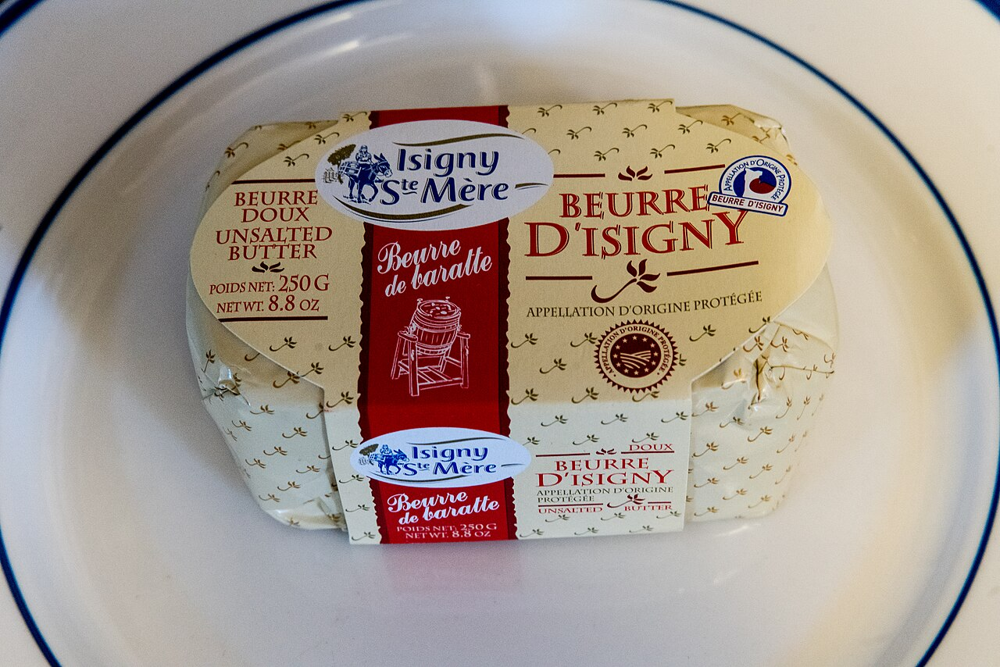
Caratteristiche: burro da panna maturata lentamente, di colore dall’avorio al giallo “bottone d’oro”, con consistenza morbida e aromi frequenti di panna fresca e nocciola. È prodotto dolce o salato ed è disponibile anche come burro da tourage per pasticceria e pasta sfoglia.

Bigoli
Birra ambrata
Birra bionda
Bottarga Di Muggine
Non esiste un DOP o un IGP per la Bottarga di muggine.
Ma Slow Food l'ha inserita fra i prodotti da salvare.
Si trova raramente in commercio.
Sardegna
Bottarga di muggine e pesca tradizionale dello stagno di Cabras
Comunicato – Immagini – Scheda
A Cabras, nello Stagno che si apre a nord del Golfo di Oristano, la bottarga di muggine viene prodotta seguendo tecniche tradizionali che risalgono ai Fenici. I muggini vengono catturati nei lavorieri, impianti naturali che intrappolano il pesce, e le uova delle femmine vengono prelevate, salate e poi essiccate all’aria per conservarle. Oltre alla bottarga, il muggine viene valorizzato anche come merca, lessato e avvolto in foglie di sa zibba, e come su pisci affumau, filetti affumicati dopo salatura e asciugatura. La pesca e la trasformazione seguono metodi artigianali, rispettosi dell’ecosistema dello stagno e della stagionalità del pesce, garantendo un prodotto dal colore ambrato e dal sapore dolce, nettamente diverso da quello dei muggini importati dall’estero. Il progetto è sostenuto dal Gal Sinis e FLAG “Pescando”.
Broccoli
Brodo

Brodo di carne
Brodo vegetale

Bucatini
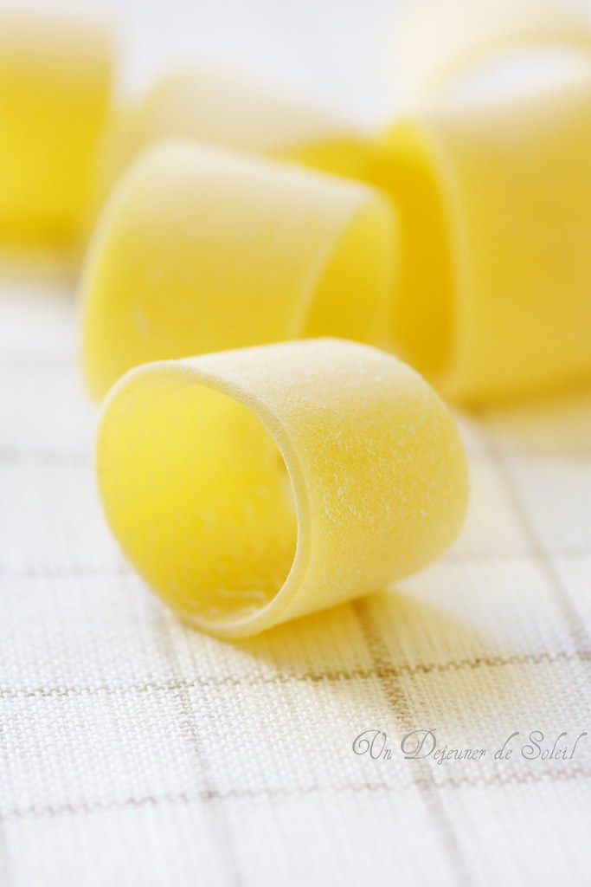

Burro

- Agnolotti al sugo d'arrostoItalia - Piemonte - Città metropolitana di Torino - Torino · Primi · Jacqueline Gibert
- Anatra all'aranciaFrancia · Secondi · Aimée Beiersdorf
- Anatra in salsaItalia - Veneto · Secondi
- CrêpesFrancia · Dolci · Jacqueline Gibert
- Fegato alla venezianaItalia - Veneto - Venezia · Secondi
- Gnocchi con le trombette dei mortiItalia - Veneto · Primi · Web
- Gulash (variante)Italia - Alto-Adige - Val-di-Casies · Secondi · Regihof
- Minestra di porriFrancia · Primi · Jacqueline Gibert
- Patatine*Francia · Contorni
- Purée di sedanoFrancia · Contorni
- Roux brunFrancia · Fondi


Burro Centrifugato

Calamari
Cannella
Canoccia

Capperi


Capperi Di Pantelleria Dop

Capperi di Pantelleria IGP
Eccellenze.
dal Ministero dell’agricoltura, della sovranità alimentare e delle foreste
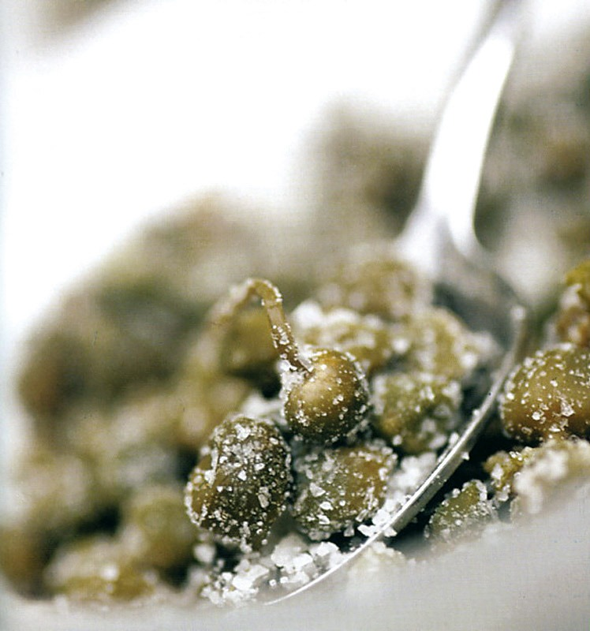
Dal disciplinare: bocciolo fiorale di Capparis spinosa della cultivar Nocellara, coltivato a Pantelleria e conservato sotto sale. È verde tendente al senape, consistente, carnoso e particolarmente aromatico.
- Paccheri di Gragnano IGP con orata, pomodorini, capperi e zenzeroItalia - Sardegna · Primi · Mix Risto bottega sarda
- Pasta con pesto alla sicilianaItalia - Sicilia · Primi
- Penne alla "Cannata"Italia - Sicilia - Salina · Primi · Ristorante "Alla cannata"
- Peperoni, alici e capperiItalia - Puglia - Bari · Antipasti · Nicola F.
- Salsa verdeItalia - Piemonte · Salse · Jacqueline Gibert
- Sfogliata puglieseItalia - Puglia · Primi · Nicola F.
- Spaghetti alla puttanescaItalia - Campania - Napoli · Primi · Eddy Salzano
- Vitello tonnatoItalia - Piemonte · Antipasti · Jacqueline Gibert

Carciofi
Eccellenze.
dal Ministero dell'agricoltura, della sovranità alimentare e delle foreste

Dal disciplinare: “L’Indicazione Geografica Protetta (IGP) “Carciofo Brindisino” designa i carciofi della specie Cynara cardunculus subsp. Le caratteristiche morfologiche della pianta del “Carciofo Brindisino” sono rappresentate da taglia di altezza media con elevata attitudine pollonifera, foglie di colore verde, inermi con eterofillia elevata. Il “ Carciofo Brindisino” ammesso a tutela, all’atto dell’immissione al consumo, deve avere le seguenti caratteristiche: - capolino di forma cilindrica, con altezza minima di 8 cm e diametro minimo di 6, mediamente compatto, brattee esterne di colore verde con sfumature violette, ad apice arrotondato intero o lievemente inciso, inerme o talvolta con una piccola spina”
Dal disciplinare: “pezzatura media (non più di 4 capolini con gambo per Kg. capolini di forma sub-sferica, compatta, con caratteristico foro all'apice”
Carciofo Romanesco del Lazio IGP
Dal disciplinare: “Descrizione) Le cultivar di "Carciofo Romanesco del Lazio" da inserire nella piattaforma varietale vengono di seguito descritte, CASTELLAMMARE E RELATIVI CLONI a) caratteristiche morfologiche Pianta: taglia media o grande, altezza inserzione capolino principale intomo ai cm 30, portamento espanso, attitudine pollonifera media Foglia: colore verde scuro, inerme, dimensioni grandi, eterofillia media Capolino Principale: sferico, compatto, con caratteristico foro all'apice, dimensioni grandi, brattee esteme di colore verde con sfiunature violette, ad”
Carciofo Spinoso di Sardegna DOP
Dal disciplinare: “Il “Carciofo Spinoso di Sardegna” proviene da coltivazioni dell’ecotipo locale “S pinoso Sardo” riconducibili alla specie botanica “ Cynara scolymus ” e si caratterizza per le peculiarità morfologiche indicate di seguito: Pianta poliennale rizomatosa di taglia media con inserzione del capolino principale ad un’altezza che varia dai 45 ai 70 cm, portamento assurgente, attitudine pollonifera elevata, produzione scalare. Foglia di colore verde spinescente di dimensioni medie ed eterofillia elevata che si manifesta con la presenza di numerose foglie a lamina intera ed altre foglie lobate o più frequentemente pennatosette.”
Cardo Bianco Gobbo
Solo da alcuni anni sembra sempre meno presente ai mercati, eppure era stato recentemente scoperto anche fuori dal Piemonte.
Eccellenze:
Presidio Slow Food:
Cardo gobbo di Nizza Monferrato

"...A settembre, quando sono già alti e rigogliosi, sono piegati e ricoperti di terra. È qui che, tentando di liberarsi per ritrovare la luce, si gonfiano e si incurvano trasformandosi in cardi gobbi; è qui che le coste perdono ogni traccia di clorofilla, diventando bianchissime e tenere. Dopo un mese l’imbianchimento è compiuto: si dissotterrano i cardi, si eliminano le foglie esterne e le coste rovinate con la purinetta (una roncola lunga e sottile) e si tiene il cuore. Basta risciacquarli con un po’ d’acqua e sono pronti: straordinariamente croccanti e dolci. Tutti i cardi si mangiano cotti, soltanto il cardo gobbo di Nizza Monferrato è buono crudo, ingrediente fondamentale di uno dei piatti simbolo della gastronomia piemontese; la bagna cauda, salsa bollente a base di aglio, olio extravergine e acciughe...."
Carne di bue grasso di Carrù

Carota
- Agnolotti al sugo d'arrostoItalia - Piemonte - Città metropolitana di Torino - Torino · Primi · Jacqueline Gibert
- Anatra all'aranciaFrancia · Secondi · Aimée Beiersdorf
- DaubeFrancia - Provenza · Secondi · Jacqueline Gibert
- Gulash (variante)Italia - Alto-Adige - Val-di-Casies · Secondi · Regihof
- Pappa con il pomodoroItalia - Toscana · Primi · Web
- Pasta e fagioliItalia - Veneto · Primi · Web
- Risi e bisiItalia - Veneto - Venezia · Primi · Web
- Soupe au pistouFrancia - Provenza · Primi · Guillaume E.
- Vitello tonnatoItalia - Piemonte · Antipasti · Jacqueline Gibert
- Zuppa di legumi con funghi settembrini secchiItalia · Primi


Carote
Carpaccio di manzo
Carrè di maiale affumicato
Cavolfiore
Cavolo

Cavolo rosso
Cime di rapa
Cipolla
Eccellenze.
Da Fondazione Slow Food - Presìdi
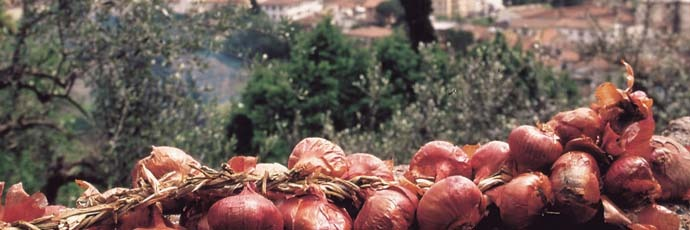
Dalla scheda ufficiale: “Citata dal Boccaccio nel Decameron, la cipolla di Certaldo è un elemento fondante dell’identità cittadina. ne esistono due varietà: la statina ha forma tonda,”
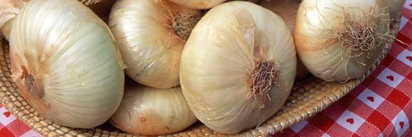
Dalla scheda ufficiale: “L’altopiano Ibleo è solcato da anguste vallate, incastrate nella roccia calcarea”
dal Ministero dell'agricoltura, della sovranità alimentare e delle foreste
Cipolla bianca di Margherita IGP
Dal disciplinare: “La denominazione “Cipolla bianca di Margherita” design a la popolazione locale di bulbi della specie Allium cepa L. E’ un prodotto fresco, caratterizzato da bulbi bianchi, teneri e con un elevato contenuto in zuccheri. In particolare, le caratteristiche delle diverse selezioni sono le seguenti: ‘Marzaiola’ o ‘Aprilatica’: tipologia precoce (epoca di raccolta a partire da metà marzo) con forma schiacciata ai poli ‘Maggiaiola’: rispetto alla precedente è meno precoce e la forma è meno schiacciata (epoca di raccolta maggio) ‘Giugniese’, ‘Lugliatica’: sono più tardive (epoca di raccolta giu gno-metà luglio), hanno forma più isodiametrica.”
Cipolla Rossa di Tropea Calabria IGP
Dal disciplinare: “) La denominazione “Cipolla Rossa di Tropea Calabria IGP” individua i bulbi della Specie Allium Cepa limitatamente ai seguenti ecotipi autoctoni, che si distinguono in base alla forma e alla precocità di bulbificazione derivante dall’influenza del fotoperiodo: “Tondo Piatta” o primaticcia Si distinguono tre tipologie di prodotto: 1) Cipollotto: a) colore: bianco-rosato - violaceo b) sapore: dolce, tenero c) calibro: si rimanda ai vincoli previsti dalle norme comunitarie 2) Cipolla da consumo fresco: a) colore: bianco-rosso fino al violaceo b) sapore: dolci e teneri c) calibro: si rimanda ai vincoli previsti dalle norme comunitarie”
- Agnolotti al sugo d'arrostoItalia - Piemonte - Città metropolitana di Torino - Torino · Primi · Jacqueline Gibert
- Anatra all'aranciaFrancia · Secondi · Aimée Beiersdorf
- Aringhe in terrinaFrancia - Alsazia · Antipasti · Jacqueline Gibert
- Arista alla birraItalia - Campania · Secondi · NdC.
- Bigoli in salsaItalia - Veneto · Primi
- Choux crouteFrancia - Alsazia · Piatto unico · Jacqueline Gibert
- DaubeFrancia - Provenza · Secondi · Jacqueline Gibert
- Fegato alla venezianaItalia - Veneto - Venezia · Secondi
- Gulash (variante)Italia - Alto-Adige - Val-di-Casies · Secondi · Regihof
- Pasta con le sardeItalia - Sicilia - Palermo · Primi
- Pasta e fagioliItalia - Veneto · Primi · Web
- Paté di fegatoFrancia · Antipasti · Jacqueline Gibert
- Purée di sedanoFrancia · Contorni
- Risi e bisiItalia - Veneto - Venezia · Primi · Web
- Soupe au pistouFrancia - Provenza · Primi · Guillaume E.
- Vitello tonnatoItalia - Piemonte · Antipasti · Jacqueline Gibert
Cipolla bianca
Eccellenze.
dal Ministero dell'agricoltura, della sovranità alimentare e delle foreste
Cipolla bianca di Margherita IGP
Dal disciplinare: “La denominazione “Cipolla bianca di Margherita” design a la popolazione locale di bulbi della specie Allium cepa L. E’ un prodotto fresco, caratterizzato da bulbi bianchi, teneri e con un elevato contenuto in zuccheri. In particolare, le caratteristiche delle diverse selezioni sono le seguenti: ‘Marzaiola’ o ‘Aprilatica’: tipologia precoce (epoca di raccolta a partire da metà marzo) con forma schiacciata ai poli ‘Maggiaiola’: rispetto alla precedente è meno precoce e la forma è meno schiacciata (epoca di raccolta maggio) ‘Giugniese’, ‘Lugliatica’: sono più tardive (epoca di raccolta giu gno-metà luglio), hanno forma più isodiametrica.”
Cipolla viola
Eccellenze.
dal Ministero dell'agricoltura, della sovranità alimentare e delle foreste
Cipolla Rossa di Tropea Calabria IGP
Dal disciplinare: “) La denominazione “Cipolla Rossa di Tropea Calabria IGP” individua i bulbi della Specie Allium Cepa limitatamente ai seguenti ecotipi autoctoni, che si distinguono in base alla forma e alla precocità di bulbificazione derivante dall’influenza del fotoperiodo: “Tondo Piatta” o primaticcia Si distinguono tre tipologie di prodotto: 1) Cipollotto: a) colore: bianco-rosato - violaceo b) sapore: dolce, tenero c) calibro: si rimanda ai vincoli previsti dalle norme comunitarie 2) Cipolla da consumo fresco: a) colore: bianco-rosso fino al violaceo b) sapore: dolci e teneri c) calibro: si rimanda ai vincoli previsti dalle norme comunitarie”
Cipollotti
Concentrato di pomodoro
Conchiglie
Coniglio
Coriandolo
Corteccia
Cosciotto d'agnello
Cotechino di suino
Eccellenze.
dal Ministero dell'agricoltura, della sovranità alimentare e delle foreste
Dal disciplinare: “Insaccato di carni suine ottenuto da muscoli striati, grasso e cotenna, insaporiti secondo il disciplinare. Dopo la cottura la fetta è compatta e uniforme, di colore rosato tendente al rosso, con consistenza morbida e gusto caratteristico.”
Cotenna di maiale
Cous cous

Cozze
Eccellenze.
dal Ministero dell'agricoltura, della sovranità alimentare e delle foreste
Dal disciplinare: “Caratteristiche biologiche La “Cozza di Scardovari” è un mollusco bivalve dalla forma allungata e dotato di una conchiglia colore nero -violaceo. Le valve sono bombate, uguali di forma quasi triangolare e presentano sottili striature concentriche. All’interno il colore è viola -madreperlaceo e questo può variare in relazione al ciclo produttivo ed al sesso. Le valve si chiudono grazie a muscoli adduttori, ad una cerniera e ad un legamento elastico, stretto allungato di colore brunastro. Caratteristiche chimico-fisiche e organolettiche La Cozza di Scardovari presenta le seguenti peculiarità derivanti dall’ambiente di produzione quali: indice di condizione…”
Crauti
Cubetti di pane abbrustoliti
Cumino
Cuore di sedano
Curaçao
Curcuma
Erbe provenzali
Fagioli bianchi e rossi
Fagioli di Lamon
Eccellenze.
dal Ministero dell'agricoltura, della sovranità alimentare e delle foreste
Fagiolo di Lamon della Vallata Bellunese IGP
Dal disciplinare: “DESCRIZIONE: Il Fagiolo di Lamon della Vallata Bellunşe si distingue in quattro ecotipi principali: Spagnolo, Spagnolit, Calonega, Canalino. 1 - Il tipo Spagnolo è di forma ovoidale e possiede una buccia abbastanaza fine 2-11 tipo Spagnolit si presenta con una forma piuttosto rotondeggiante”
Fagiolini verdi
Farina
Farina di frumento 00
Fegatini di pollo
Fegato
Fegato di anatra
Fegato di vitello
Fesa di tacchino

Filetti di orata
Filettino di maiale

Filetto angus

Finocchi
Eccellenze.
dal Ministero dell'agricoltura, della sovranità alimentare e delle foreste
Finocchio di Isola Capo Rizzuto IGP
Dal disciplinare: “Finocchio coltivato nell'area di Isola di Capo Rizzuto, con grumolo bianco, compatto e ben formato. Si distingue per la consistenza croccante, l'aroma caratteristico e il gusto dolce.”
Finocchietto
Funghi porcini
Funghi settembrini
Funghi trombette dei morti essiccati e grattugiati
Fusilli
Gallina
Girello di vitello intero
Gnocchetti di patate
Gnocchetti sardi
Grana Padano
Eccellenze.
dal Ministero dell'agricoltura, della sovranità alimentare e delle foreste
Dal disciplinare: “DESCRIZIONE DEL PRODOTTO: SINľESI DEI REQUISITI DI CUI ALL'ART.4, PARAGRAFO 2: a) NOME: cfr.3 Grana Padano b) DESCRIZIONE: formaggio, di latte di vacca, semi grasso, a pasta cotta, a lenta maturazione, di forma cilindrica a scalzo leggermente convesso o quasi diritto con facce piane leggermente orlate, usato da tavola o da grattugia e) ZONA GEOGRAFICA: l'intero territorio delle provincie di Alessandria, Asti, Cuneo,”
Insalata novella
Lardo
Eccellenze.
dal Ministero dell'agricoltura, della sovranità alimentare e delle foreste

Dal disciplinare: “Lardo suino stagionato nelle conche di marmo di Colonnata con sale, spezie ed erbe aromatiche. Ha aspetto umido, colore bianco rosato, consistenza omogenea e morbida e gusto delicato, fresco e aromatico.”
Valle d'Aosta Lard d'Arnad / Vallée d'Aoste Lard d'Arnad DOP
Dal disciplinare: “Lardo suino stagionato nei tradizionali contenitori con sale, acqua, aglio, spezie ed erbe aromatiche. Al taglio è bianco, talvolta con un sottile strato di carne, di consistenza morbida e gusto delicatamente dolce e aromatico.”
- Agnolotti al sugo d'arrostoItalia - Piemonte - Città metropolitana di Torino - Torino · Primi · Jacqueline Gibert
- Anatra all'aranciaFrancia · Secondi · Aimée Beiersdorf
- DaubeFrancia - Provenza · Secondi · Jacqueline Gibert
- Medaglioni di manzo con porciniItalia - Toscana · Secondi · Montefioralle
- Minestra di cavoliFrancia · Primi · Jacqueline Gibert
- Paté di fegatoFrancia · Antipasti · Jacqueline Gibert
Latte
Latte intero
Legumi misti secchi
Lenticchie
Eccellenze.
Da Fondazione Slow Food - Presìdi
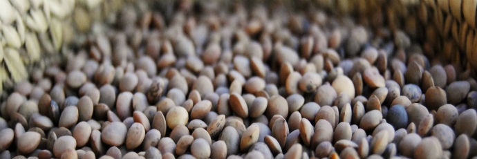
Dalla scheda ufficiale: “Area di Produzione Altopiano di Rascino, nel comune di Fiamignano (provincia di Rieti).”
Lenticchia di Santo Stefano di Sessanio
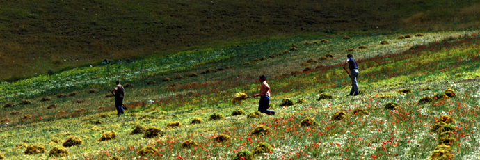
Dalla scheda ufficiale: “Area di produzione Comuni di Santo Stefano di Sessanio e alcune aree dei comuni limitrofi (provincia di L'Aquila).”
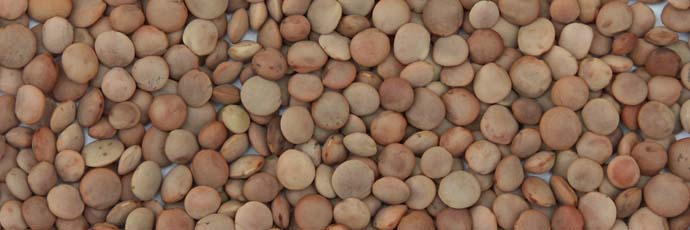
Dalla scheda ufficiale: “Lenticchia di piccola pezzatura coltivata sull'isola di Ustica, dal tegumento bruno e dalla polpa tenera. Cuoce senza necessità di ammollo e conserva un gusto intenso e caratteristico.”
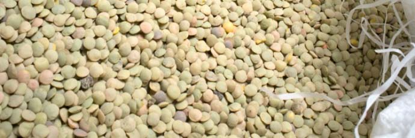
Dalla scheda ufficiale: “Area di produzione Comune di Villalba, Mussomeli, Marianopoli, Vallelunga e Cammarata (provincia di Caltanissetta).”
Lenticchia nera delle colline ennesi
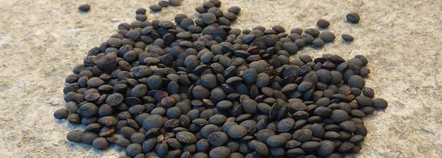
Dalla scheda ufficiale: “Area di produzione Aree collinari dei comuni di Leonforte, Enna, Calascibetta, Marianopoli (provincia di Enna).”
dal Ministero dell'agricoltura, della sovranità alimentare e delle foreste
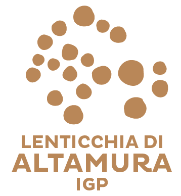
Dal disciplinare: “All’atto dell’immissione al consumo la “Lenticchia di Altamura” deve presentare le seguenti caratteristiche: Forma: tonda e appiattita Colore: diverse gradazioni del verde e del marrone La granella secca non deve presentare alterazioni di colore e di aspetto esteriore tali da comprometterne le caratteristiche, con una tolleranza complessiva massima del 1,5% di: prodotto spaccato, macchiato, tonchiato o alterato a livello di colorazione.”
Lenticchia di Castelluccio di Norcia IGP
Dal disciplinare: “La denominazione "LENTICCHIA DI CASTELLUCCIO DI NORCIA" è riservata all'insieme di ecotipi locali di lenticchia le cui caratteristiche morfologiche sono quelle di leguminosa annuale con altezza variabile da 20 a 40 cm., portamento eretto o semieretto, steli e rami glabri, fiori piccoli bianchi con sfumature celesti riuniti in infiorescenze ascellari”
Dal disciplinare: “La “Lenticchia di Onano” I.G.P. Per la produzione della “Lenticchia di Onano” è con sentito l’utilizzo anche di altre cultivar di lenticchia derivanti dalla ricerca varietale a condizione che ne sia dimostrata, attraverso prove sperimentali e documentali, la conformità del metodo di ottenimento e delle caratteristiche qualitative del frutto al p resente disciplinare di produzione. deve presentare le seguenti caratteristiche: Caratteristiche Fisiche: Forma: lenticolare appiattita Dimensione: diametro 3-8 mm Colore: marrone chiaro, verdastro variabile in intensità e grado di marmorizzazione (1 - 95%) sulla superficie Tegumento: liscio e sottile Peso medio per 100 semi: non inferiore a 4,50 grammi.”
Lievito per dolci
Limone
Eccellenze.
dal Ministero dell'agricoltura, della sovranità alimentare e delle foreste
Dal disciplinare: “Limone dell'ecotipo Sfusato amalfitano, di forma ellittico-allungata, con buccia giallo citrino di medio spessore, ricca di oli essenziali. La polpa è succosa, moderatamente acida e con pochi semi.”
Dal disciplinare: “Limone ottenuto da cultivar ed ecotipi del gruppo Femminello coltivati alle pendici dell'Etna. Le diverse fioriture danno frutti dalla buccia aromatica e dalla polpa succosa, con acidità e profumo caratteristici.”
Dal disciplinare: “L'Indicazione Geografica Protetta “Limone di Rocca Imperiale” e' riservata ai frutti provenienti dalle cultivar del gruppo Femminello, appartenente alla specie botanica Citrus Limun Burm., noti nel comprensorio col nome di “Limone di Rocca Imperiale”. All’atto della sua immissione al consumo, i frutti di «Limone di Rocca Imperiale» presentano le seguenti caratteristiche: - colore della buccia: da verde chiaro a giallo forma del frutto: da ellittico-allungata a sferoidale flavedo: ricco di olio essenziale, aroma e profumo forte e intenso con contenuto in limonene > 70% (% sul totale degli idrocarburi terpenici)”
Dal disciplinare: “L’Indicazione Geografica Protetta “ Limone di Siracusa ” è riservata alla cultivar “Femminello” e ai suoi cloni, riferibil i alla specie botanica Citrus limon (L) Burm coltivat i in impianti specializzati nel territorio della Provincia di Siracusa definito nel successivo art.3, rispondenti ai requisiti stabiliti nel presente disciplinare. In particolare, i dati caratterizzanti le tipologie di frutto a seconda delle epoche di raccolta, sono le seguenti: Primofiore sono i frutti raccolti a partire dal 1 ottobre e che rispondono alle seguenti caratteristiche: Colore della buccia: da verde chiaro a giallo citrino”
Dal disciplinare: “Limone dell'ecotipo Ovale o Femminello di Sorrento, di pezzatura medio-grande e forma ellittica. Ha buccia giallo citrino ricca di oli essenziali, profumo intenso e polpa molto succosa e acidula.”
Limone Interdonato Messina IGP
Dal disciplinare: “L'Indicazione Geografica Protetta «Limone Interdonato Messina» e' riservata alla cultivar «Interdonato», ibrido naturale tra un clone di cedro e un clone di limo ne, appartenente alla Fam: Rutacee All’atto della sua immissione al consumo l’indicazione geografica protetta «Limone Interdonato Messina» presenta le seguenti caratteristiche: frutto: (esperidio) di pezzatura medio-elevata compresa tra 80 e 350 gr. forma: tipicamente ellittica con umbone pronunciato e cicatrice stilare poco depressa colore: ad inizio della maturazione commerciale verde opaco con viraggio sul g iallo e alla maturazione fisiologica colore giallo ad eccezione delle estremità che manteng ono una colorazione verde opaco”
- Anatra in salsaItalia - Veneto · Secondi
- Antipasto di canocceItalia - Veneto · Antipasti
- CrêpesFrancia · Dolci · Jacqueline Gibert
- MadeleineFrancia - Normandia · Dolci
- Straccetti di pollo al limoneItalia · Secondi
- Tajin MqualliMarocco · Secondi
- Tortino di aliciItalia - Lazio - Roma · Antipasti · Eddy Salzano
- Trancio di tonno con sesamo provenzaleFrancia - Provenza · Secondi

Limoni
Lingua di manzo
Maiale
Eccellenze.
Da Fondazione Slow Food - Presìdi
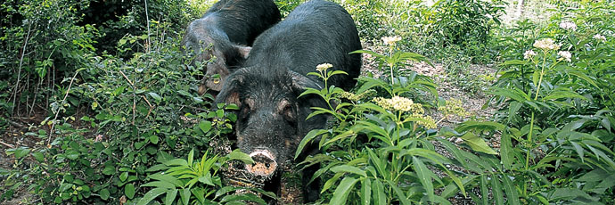
Dalla scheda ufficiale: “Razza autoctona della Romagna, la mora romagnola ha rischiato di scomparire: nel 1949 ne esistevano circa 22.000 esemplari, ridotti, qualche anno fa, a meno”
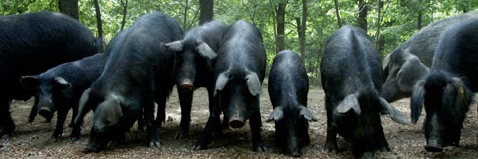
Dalla scheda ufficiale: “Di taglia piccola e mantello scuro, i suini neri dei Nebrodi sono allevati allo stato semibrado e brado nei boschi di faggi e querce”
dal registro eAmbrosia - registro delle indicazioni geografiche dell'Unione europea
Dal disciplinare: “Carne di suini di razza Cinta Senese nati, allevati e macellati in Toscana secondo il disciplinare. La carne fresca è rosso vivo, di tessitura fine e con marezzatura equilibrata.”
Maionese
Mandorle
Mandorle sgusciate
Mandorle tostate e grattugiate
Manzo
Eccellenze.
dal registro eAmbrosia - registro delle indicazioni geografiche dell'Unione europea
Vitellone Bianco dell'Appennino Centrale IGP
Dal disciplinare: “colore delle parti carnose esposte della carcassa non deve presentare colorazioni anomale (magenta o tendente al nero). Il colore del grasso visibile non deve tendere al giallo cinerino ne' deve avere venature tendenti al giallo carico. I parametri qualitativi della carne di Vitellone Bianco dell'Appennino Centrale devono essere: - pH fra 5.2 e 5.8 -.”
Da altre fonti documentarie:
Bue grasso di Carru / Consorzio tutela bue grasso
Dal disciplinare: “Sito ufficiale del Consorzio di tutela del Bue Grasso di Carrù Accetti i Cookies ?”
- Agnolotti al sugo d'arrostoItalia - Piemonte - Città metropolitana di Torino - Torino · Primi · Jacqueline Gibert
- DaubeFrancia - Provenza · Secondi · Jacqueline Gibert
- Gulash (variante)Italia - Alto-Adige - Val-di-Casies · Secondi · Regihof
- Medaglioni di manzo con porciniItalia - Toscana · Secondi · Montefioralle
- Roastbeef (arrosto all'inglese)Regno Unito · Secondi
Marsala
Eccellenze.
dal registro eAmbrosia - registro delle indicazioni geografiche dell'Unione europea
Dal disciplinare: “DESCRIZIONE DEI VINI: “Marsala” Fine Oro, Fine Ambra e Fine Rubino Domanda di una nuova modifica Marsala (it) DOP - Denominazione di origine protetta 3. Vino liquoroso Breve descrizione testuale Colore: dorato più o meno intenso o giallo ambrato più o meno intenso o rosso rubino che, con l’invecchiamento, acquista riflessi ambrati”
Mazzancolle
Mela
Melanzana
Melanzane lunghe
Eccellenze.
dal Ministero dell'agricoltura, della sovranità alimentare e delle foreste
Melanzana Rossa di Rotonda DOP
Dal disciplinare: “La denominazione d’origine protetta (DOP) “Melanzana Rossa di Rotonda ” si ottiene con l’ecot ipo Melanzana Rossa di Rotonda riconducibile alla specie Solanum aethiopicum, comunemente nota come Melanzana Rossa. La Melanzana Rossa di Rotonda, all'atto dell'immissione al consumo allo stato fresco deve avere le seguenti caratteristiche: - pezzatura della bacca: lunghezza fino a cm. colore e sovracolore, verde arancio chiaro con tenui sfumature verdognole ad inizio maturazione e successivamente arancione vivo tendente al rosso lucido bacca intera di aspetto fresco, sana”
Melograno
Mezze penne rigate
Miele
Eccellenze.
dal Ministero dell'agricoltura, della sovranità alimentare e delle foreste
Dal disciplinare: “Descrizione del prodotto 2.1 Si definisce "Miele della Lunigiana" di Acacia, il Miele prodotto su fioritura di Robinia pseudoacacia L. 2.2 Caratteristiche del prodotto 2.2.1 "Miele della Lunigiana" di Acacia 2.2.1.1 Caratteristiche organolettiche Il "Miele della Lunigiana" di Acacia presenta le seguenti caratteristiche: - si mantiene a lungo liquido e limpido”
Miele delle Dolomiti Bellunesi DOP
Dal disciplinare: “Il “Miele delle Dolomiti Bellunesi” viene prodotto a partire dal nettare dei fiori e dalle melate del territorio montano bellunese, dall’ecotipo locale di “Apis mellifera” che deriva da incroci naturali tra diverse razze apistiche, prevalentemente tra quella Ligustica e Carnica essa si è particolarmente adattata nel corso del tempo alle caratteristiche dell’ambiente montano alpino bellunese e permette di ottenere buone rese di miele. Caratteristiche chimico-fisiche Oltre al “pregio floreale”, la qualità del Miele delle Dolomiti bellunesi ha altri aspetti fondamentali, come la purezza, la salubrità e l’elevata conservabilità, testimoniate anche dal basso valore di HMF…”
Miele delicato
Mollica di pane imbevuto di latte
Montone
Nepetella
Chiamata anche mentuccia romana.
Noce moscata
Olio
Eccellenze.
dal Ministero dell'agricoltura, della sovranità alimentare e delle foreste
Dal disciplinare: “Olio extra vergine ottenuto nell'area collinare bolognese delimitata dal disciplinare. Presenta fruttato di oliva da medio a intenso, con note vegetali e sensazioni di amaro e piccante.”
dal registro eAmbrosia - registro delle indicazioni geografiche dell'Unione europea
Dal disciplinare: “Olio extra vergine ottenuto in Campania da olive prodotte e trasformate nel territorio regionale. Presenta fruttato di oliva con note vegetali, accompagnato da sensazioni di amaro e piccante.”
Dal disciplinare: “Olio extra vergine ottenuto in Abruzzo dalle varietà previste dal disciplinare. È caratterizzato da fruttato di oliva, con richiami vegetali e un equilibrio di amaro e piccante.”
Dal disciplinare: “Olio extra vergine prodotto in Calabria con olive delle varietà ammesse dal disciplinare. Il profilo organolettico è fruttato, con intensità variabile, e presenta sensazioni di amaro e piccante.”
Dal disciplinare: “Olio extra vergine ottenuto in Puglia da olive prodotte, raccolte e trasformate nel territorio regionale. È caratterizzato da fruttato di oliva, accompagnato da percezioni di amaro e piccante.”
Dal disciplinare: “Olio extra vergine dal fruttato con sentori riconducibili a pomodoro, carciofo, mandorla ed erba, con amaro e piccante; il colore varia dal verde al giallo dorato.”
Dal disciplinare: “Olio extra vergine prodotto in Basilicata dalle varietà previste dal disciplinare. Ha fruttato di oliva verde o matura, con percezioni vegetali e sensazioni di amaro e piccante.”
Olio extra vergine d'oliva
Eccellenze.
dal Ministero dell'agricoltura, della sovranità alimentare e delle foreste
Dal disciplinare: “Olio extra vergine ottenuto in Campania da olive prodotte e trasformate nel territorio regionale. Presenta fruttato di oliva con note vegetali, accompagnato da sensazioni di amaro e piccante.”
Dal disciplinare: “Olio extra vergine ottenuto nell'area collinare bolognese delimitata dal disciplinare. Presenta fruttato di oliva da medio a intenso, con note vegetali e sensazioni di amaro e piccante.”
Dal disciplinare: “Olio extra vergine prodotto in Calabria con olive delle varietà ammesse dal disciplinare. Il profilo organolettico è fruttato, con intensità variabile, e presenta sensazioni di amaro e piccante.”
Dal disciplinare: “Olio extra vergine ottenuto in Puglia da olive prodotte, raccolte e trasformate nel territorio regionale. È caratterizzato da fruttato di oliva, accompagnato da percezioni di amaro e piccante.”
Dal disciplinare: “Olio extra vergine dal fruttato con sentori riconducibili a pomodoro, carciofo, mandorla ed erba, con amaro e piccante; il colore varia dal verde al giallo dorato.”
Dal disciplinare: “Olio extra vergine prodotto in Basilicata dalle varietà previste dal disciplinare. Ha fruttato di oliva verde o matura, con percezioni vegetali e sensazioni di amaro e piccante.”
dal registro eAmbrosia - registro delle indicazioni geografiche dell'Unione europea
Dal disciplinare: “Olio extra vergine ottenuto in Abruzzo dalle varietà previste dal disciplinare. È caratterizzato da fruttato di oliva, con richiami vegetali e un equilibrio di amaro e piccante.”
- Agnolotti al sugo d'arrostoItalia - Piemonte - Città metropolitana di Torino - Torino · Primi · Jacqueline Gibert
- Antipasto di canocceItalia - Veneto · Antipasti
- Aringhe in terrinaFrancia - Alsazia · Antipasti · Jacqueline Gibert
- Battuta di manzo alla boscaiolaItalia - Veneto - Alpago · Secondi · Antonio S.
- Bigoli in salsaItalia - Veneto · Primi
- Braciole di carne di cavalloItalia - Puglia · Primi · Nicola F.
- Calamari ripieniItalia - Puglia · Secondi · Nicola F.
- Cavolo rosso conditoFrancia - Alsazia · Antipasto · Jacqueline Gibert
- Fegato alla venezianaItalia - Veneto - Venezia · Secondi
- Filettin o di maialeCroazia - Hvar · Secondi · Ristorante Hanibal
- Fusilli carciofi e salmoneItalia · Primi
- Gigot rotiFrancia · Secondi · Jacqueline Gibert
- Gnocchetti sardi alla UrbawebItalia - Veneto - Venezia · Primi · Eddy Salzano
- Medaglioni di manzo con porciniItalia - Toscana · Secondi · Montefioralle
- Minestra di porriFrancia · Primi · Jacqueline Gibert
- Paccheri di Gragnano IGP con orata, pomodorini, capperi e zenzeroItalia - Sardegna · Primi · Mix Risto bottega sarda
- Pasta al ragù di triglie e al succo d'aranciaItalia - Sicilia · Primi · Web
- Pasta con i broccoliItalia - Lazio - Roma · Primi · Eddy Salzano
- Pasta con le melanzaneItalia - Veneto · Primi
- Pasta con le sardeItalia - Sicilia - Palermo · Primi
- Pasta con pesto alla sicilianaItalia - Sicilia · Primi
- Patatine*Francia · Contorni
- Penne alla "Cannata"Italia - Sicilia - Salina · Primi · Ristorante "Alla cannata"
- Penne con zucchineItalia · Primi
- Peperoni, alici e capperiItalia - Puglia - Bari · Antipasti · Nicola F.
- Ratatouille (variante)Francia - Provenza · Contorni · Guillaume E.
- Riso cozze e patateItalia - Puglia - Bari · Primi · Nicola F.
- Roastbeef (arrosto all'inglese)Regno Unito · Secondi
- Salsa verdeItalia - Piemonte · Salse · Jacqueline Gibert
- Sarde a beccaficoItalia - Sicilia · Antipasti · Ricettario "La cucina Siciliana"
- Sfogliata puglieseItalia - Puglia · Primi · Nicola F.
- Soupe au pistouFrancia - Provenza · Primi · Guillaume E.
- Spaghetti alla bottargaItalia - Sicilia · Primi · Franco C.
- Straccetti di pollo al limoneItalia · Secondi
- Tajin MqualliMarocco · Secondi
- Tonno alla CarloFortinaItalia - Sardegna - Carloforte · Secondi · Serena S.
- Tortino di aliciItalia - Lazio - Roma · Antipasti · Eddy Salzano
- Trancio di tonno con sesamo provenzaleFrancia - Provenza · Secondi
- Zucchine in scapeceItalia - Campania - Napoli · Antipasti
- Zuppa di legumi con funghi settembrini secchiItalia · Primi

Olive Di Gaeta
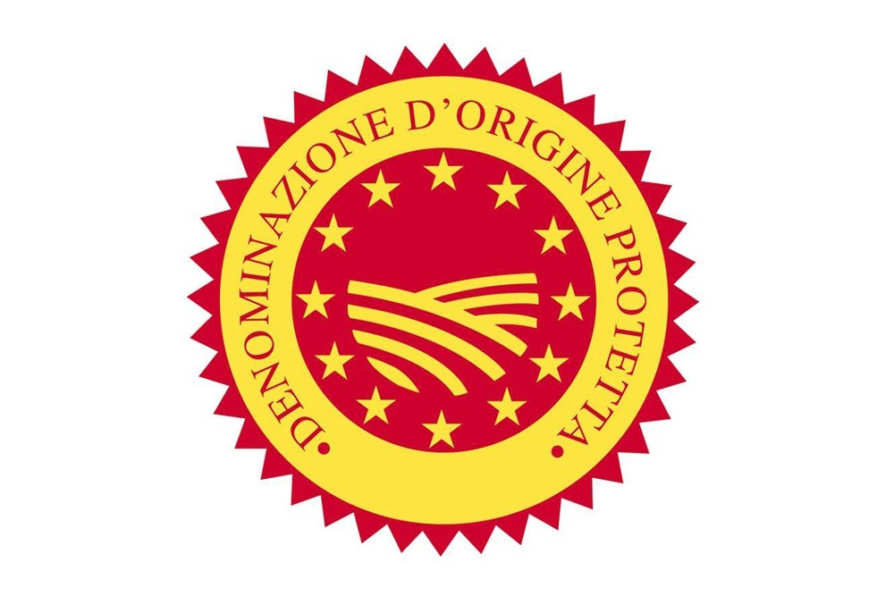

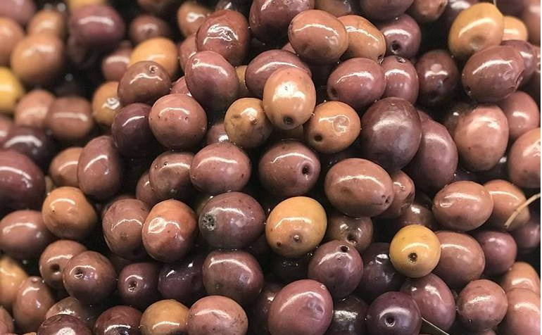
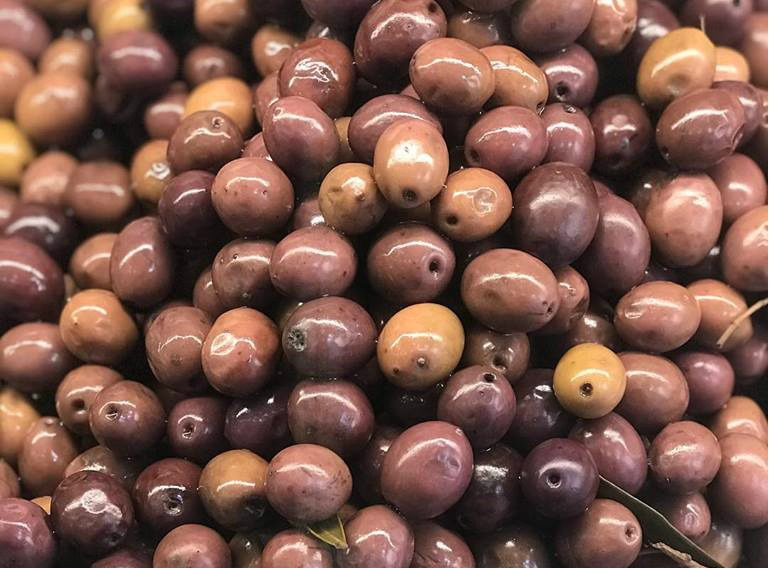
Olive di Gaeta DOP
Eccellenze.
dal Ministero dell'agricoltura, della sovranità alimentare e delle foreste
Dal disciplinare: “Oliva da mensa della varietà Itrana, raccolta a piena maturazione e trasformata in salamoia. Ha colore dal rosa intenso al violaceo o nero, polpa soda che si distacca dal nocciolo e gusto sapido, lievemente amarognolo e vinoso.”
Olive Nere

Olive nere snocciolate pugliesi
Olive verdi
Orecchiette baresi
Osso di prosciutto crudo
Pancetta
Eccellenze.
dal Ministero dell'agricoltura, della sovranità alimentare e delle foreste
Dal disciplinare: “Salume ricavato dal sottocostato inferiore del suino, rifilato e stagionato con sale, pepe e peperoncino. Al taglio presenta strati alternati di carne rosata e grasso bianco, con profumo intenso e gusto sapido e aromatico.”
Dal disciplinare: “Salume stagionato di forma cilindrica, con alternanza regolare di parti rosse e bianche. Al taglio la fetta è morbida; profumo e sapore sono gradevoli, dolci e sapidi, con note delle spezie impiegate.”
Pancetta affumicata
Pane toscano
Eccellenze.
dal Ministero dell'agricoltura, della sovranità alimentare e delle foreste
Dal disciplinare: “Pane prodotto con farina di grano tenero, lievito madre e acqua, senza sale. Ha crosta friabile e croccante, mollica soffice e irregolarmente alveolata e un profumo di cereale tostato e frutta secca.”
Pangrattato
- Pasta con le sardeItalia - Sicilia - Palermo · Primi
- Penne alla "Cannata"Italia - Sicilia - Salina · Primi · Ristorante "Alla cannata"
- Sarde a beccaficoItalia - Sicilia · Antipasti · Ricettario "La cucina Siciliana"
- Spaghetti alla bottargaItalia - Sicilia · Primi · Franco C.
- Tortino di aliciItalia - Lazio - Roma · Antipasti · Eddy Salzano
Panna
Paprika
Parmigiano Reggiano

Parmigiano Reggiano DOP
Eccellenze.
dal Ministero dell'agricoltura, della sovranità alimentare e delle foreste
Dal disciplinare: “Formaggio a pasta dura, cotta e a lenta maturazione, ottenuto da latte vaccino crudo. La pasta è finemente granulosa e friabile, di colore paglierino, con aroma fragrante e gusto saporito ma armonico.”
Passata di pomodoro
Pasta


Pasta di Gragnano IGP
Dal disciplinate della Pasta di Gragnano IGP.
La “Pasta di Gragnano” è il prodotto ottenuto dall’impasto della semola di grano duro con acqua della falda acquifera locale.
I formati immessi al consumo sono, diversi, tutti tipici, frutto della fantasia dei pastai gragnanesi.
Il prodotto all'atto dell'immissione al consumo, deve possedere le seguenti caratteristiche:
2.1 Caratteristiche fisiche:
aspetto esterno: omogeneo senza macchie bianche o nere; assenza di bolle d'aria, di fessure o tagli, di muffe, larve o parassiti e di corpi estranei;
sezione di frattura: vitrea;
colore: giallo paglierino;
rugosità: presente quale caratteristica dell’uso delle trafile in bronzo.
Alla cottura la “Pasta di Gragnano” IGP si presenta di:
consistenza: soda ed elastica;
omogeneità della cottura: uniforme;
tenuta di cottura: buona e lunga;
collosità: assente o impercettibile.
2.2 Caratteristiche chimiche:
umidità: non superiore al 12,5% sul prodotto finito;
proteine minimo: 13% sulla sostanza secca;
ceneri max.: 0.86% sulla sostanza secca.
2.3 Caratteristiche organolettiche:
sapore: sapido con gusto deciso di grano duro;
odore: di grano maturo.
Pasta per pane
Patate
Eccellenze.
dal Ministero dell'agricoltura, della sovranità alimentare e delle foreste

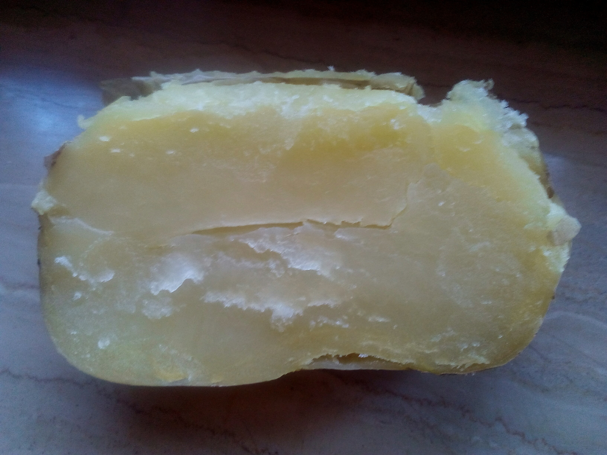
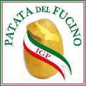
Dal disciplinare: “Patata coltivata nell'altopiano del Fucino, nelle varietà ammesse dal disciplinare. I tuberi sono regolari, integri e consistenti, con caratteristiche di sostanza secca e tenuta adatte ai diversi impieghi culinari.”
Patata dell'Alto Viterbese IGP
Dal disciplinare: “La denominazione "Patata dell'Alto Viterbese" designa i tuberi maturi della specie Solanum tuberosum della famiglia della Solanacee, ottenuti con tuberi semi di varietà di patat e iscritte nel catalogo comune delle varietà di piante agricole, coltivate nell’area delimitata di cui all’art. 3, che presenta all’atto dell’immissione al consumo le seguenti caratteristiche: Fisiche: - forma: ovale od ovale allungata regolare parte edibile: non inferiore al 97 % Per il prodotto destinato alla IV gamma non sono previsti limiti di forma e di calibratura. In ciascuna confezione destinata al mercato sono ammesse, inoltre, le seguenti tolleranze di qualità: - difetti esterni dei tuberi: immaturi, non interi, avvizziti e deformati: 1% in peso”
Dal disciplinare: “Tubero coltivato nell'altopiano della Sila con le varietà e i requisiti stabiliti dal disciplinare. Si caratterizza per l'elevato contenuto di sostanza secca, che ne favorisce consistenza e tenuta in cottura.”
Dal disciplinare: “La confezione reca obbligatoriamente sull’etichetta, a caratteri chiari e leggibili il simbolo grafi co comunitario e relative menzioni, in conformità alle precisazioni del Reg. La dizione “Denominazione di Origine Protetta” può essere ripetuta in altra parte della confezione o dell’etichetta anche in forma di acronimo “D.O.P.”.”
Patata Novella di Galatina DOP
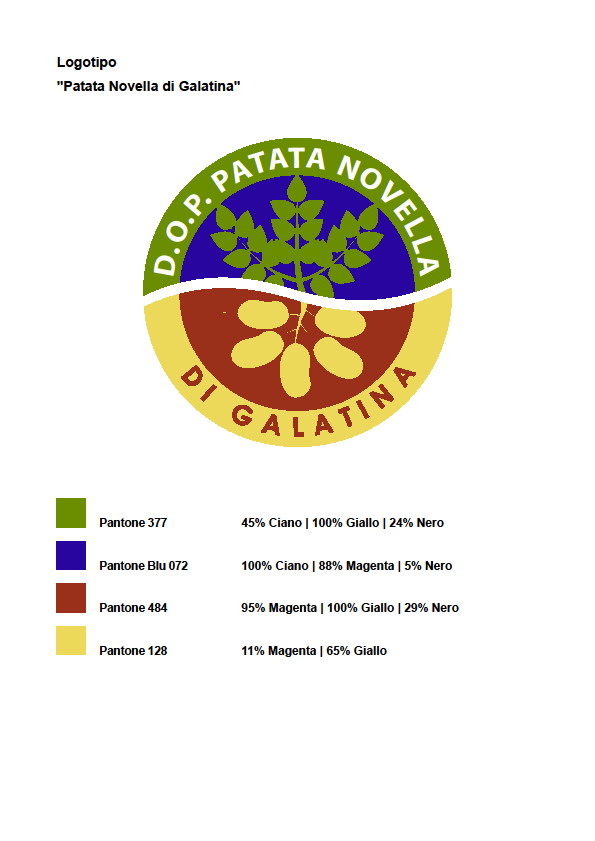
Dal disciplinare: “La Denominazione di Origine Protetta “Patata novella di Galatina” designa esclusivamente i tuberi della specie Solanum tuberosum, var. Le caratteristiche del prodotto all’atto dell’immissione al consumo sono le seguenti: FISICHE - epidermide (corteccia o buccia), di colore giallo intenso, brillante anche per la presenza di residui terrosi derivanti dalla coltivazione nelle ter re rosse, assume un colore ruggine “cioccolato”. forma lungo – ovale, di media grandezza tuberi interi, non germinati, di forma regolare ed esenti da malformazioni, da sapori ed odori anomali”
Patata Rossa di Colfiorito IGP
Dal disciplinare: “La denominazione “Patata Rossa di Colfiorito” designa i tuberi maturi della specie Solanum tuberosum (Solanum tuberosum L. 2n=4x=48) della famiglia delle Sol anacee, coltivati a partire da varietà delle sementi di base catalogate nei registri varietali nazionali degli Stati Membri dell’Unione Europea con caratteristica buccia di colore rosso e polpa di colore giallo-chiaro. La tipicità e la riconoscibilità dei tuberi sono determinate dalle seguenti caratteristiche: interi, completamente abbucciati, privi di macchie privi di odore e/o sapore estranei alle sue normali caratteristiche”
- Battuta di manzo alla boscaiolaItalia - Veneto - Alpago · Secondi · Antonio S.
- Gulash (variante)Italia - Alto-Adige - Val-di-Casies · Secondi · Regihof
- Minestra di cavoliFrancia · Primi · Jacqueline Gibert
- Minestra di porriFrancia · Primi · Jacqueline Gibert
- Purée di sedanoFrancia · Contorni
- Riso cozze e patateItalia - Puglia - Bari · Primi · Nicola F.
- Soupe au pistouFrancia - Provenza · Primi · Guillaume E.
- Tajin MqualliMarocco · Secondi
Patate gialle
Patatine
Pecorino
Eccellenze.
dal Ministero dell'agricoltura, della sovranità alimentare e delle foreste
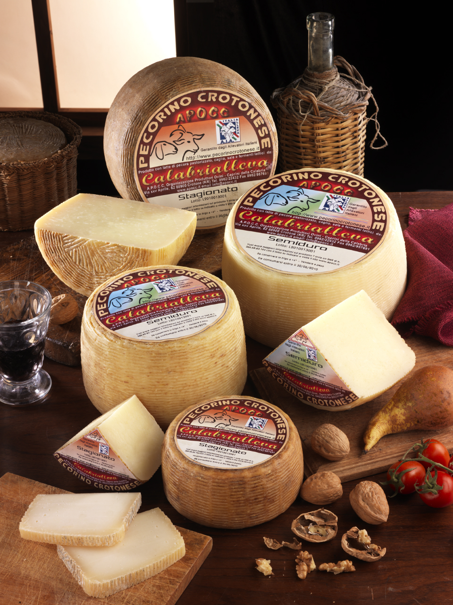
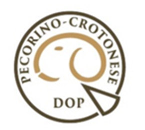
Dal disciplinare: “Il pecorino Crotonese presenta le seguenti caratteristiche: Forma: cilindrica con facce piane o leggermente convesse e con scalzo dritto o leggermente convesso Peso: o formaggio fresco: o per la forma piccola il peso è compreso fra kg. o per la forma media il peso è compreso fra kg 1,3 e kg 3. o formaggio semiduro e stagionato: o per la forma media il peso è compreso fra kg 1,3 e kg 2,5 o per la forma grande il peso è compreso fra kg 5 e kg 15. La produzione di Pecorino Crotonese in forma diversa da quella cilindrica è permessa solo ed esclusivamente per determinate t ipologie di richiesta, ed è ammessa per il prodotto destinato esclusivamen te al preconfezionamento (affettato, cubettatura, grattug ia).”
Dal disciplinare: “finito Il “Pecorino del Monte Poro” DOP è un formaggio prodotto con latte di pecora, che risponde, a seconda del periodo di stagionatura, alle seguenti tre diverse tipologie: - “fresco”, da 20 giorni a 60 giorni di conservazione Il "Pecorino del Monte Poro” deve, inoltre, presentare al momento dell’immissione al consumo, le seguenti caratteristiche. 2.1 Caratteristiche fisiche Forma: rotonda, facce piane. Crosta: dura, rugosa, di colore variabile dal giallo oro per la tipologia «fresco» al nocciola più o meno scuro per la tipologia «semistagionato» e «stagionato», tendente al rossiccio, laddove unto con peperoncino e olio extravergine di oliva e peperoncino per trattare la crosta esterna.”
Pecorino delle Balze Volterrane DOP
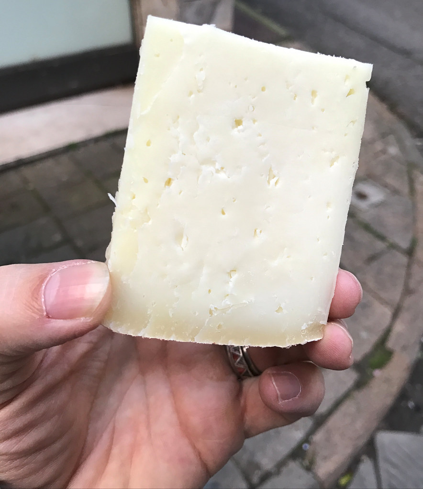
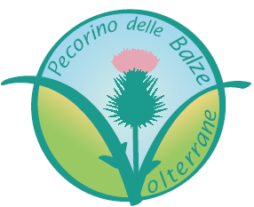
Dal disciplinare: “finito Il "Pecorino delle Balze Volterrane” è un formaggio prodotto esclusivamente con caglio vegetale e latte ovino crudo intero proveniente da allevamenti ubicati nella zona di cui all’art.3, rispondente, a seconda del periodo di stagionatura, a quattro diverse tipologie: “fresco”, da 7 giorni a 44 giorni di conservazione Il "Pecorino delle Balze Volterrane” deve, inoltre, avere al momento della immissione al consumo, le seguenti caratteristiche: 2.1 Caratteristiche fisiche Forma: cilindrica a facce piane con scalzo dritto o leggermente convesso. Crosta: di colore variabile dal giallo pa glierino al giallo carico.”
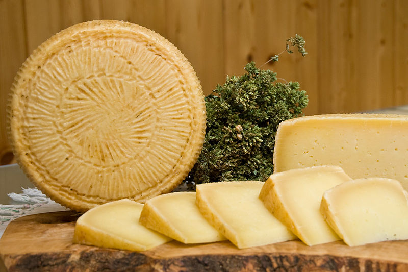
Dal disciplinare: “finito Il formaggio "Pecorino di Filiano" può essere utilizzato come formaggio da tavola e da grattugia e all'atto del consumo il prodotto deve avere le seguenti caratteristiche: - la forma deve essere cilindrica a facce piane con scalzo diritto o leggermente convesso il peso deve essere compreso da 2,5 a 5 Kg in relazione alle dimensioni della forma il colore della crosta recante i caratteristici segni della fuscella si presenta dal giallo dorato al bruno scuro nelle forme più stagionate e trattate superficialmente con olio extra vergine di oliva prodotto in Basilicata e aceto di vino, tramite uno sfregamento superficiale effettuato a mano”
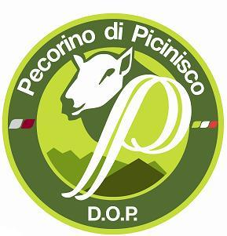
Dal disciplinare: “All’atto dell’immissione al consumo, il “Pecorino di Picinisco” DOP è un formaggio di forma cilindrica a facce piane, a latte crudo e a pasta c ruda, ottenuto da latte ovino delle razze di Sopravissana, Comisana, Massese o incroci con almeno una di queste razze. Il formaggio “Pecorino di Picinisco” DOP, immesso al consumo nelle tipologie “Scamosciato” e “Stagionato”, presente le seguenti caratteristiche: o Scamosciato: Stagionatura: da 30 a 60 giorni Crosta: sottile e rugosa, tendente al giallo paglierino Pasta: struttura compatta con leggera occhiatura colore bianco tendente al giallo paglierino”
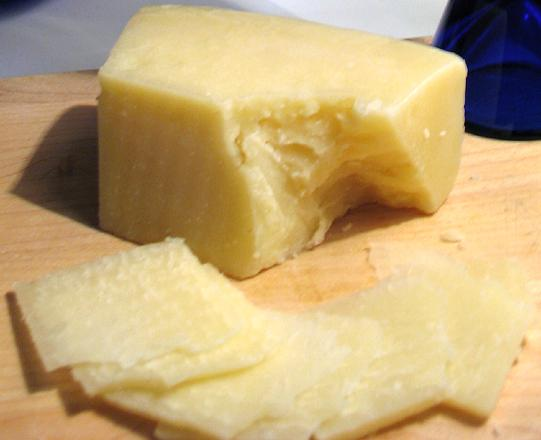
Dal disciplinare: “Il formaggio a pasta dura e cotta “Pecorino Romano” è prodotto esclusivamente con latte fresco di pecora intero, proveniente da allevamenti ubicati nella zona di cui all’art. All’atto della sua immissione al consumo il formaggio “Pecorino Romano” si presenta di forma cilindrica a facce piane, con dimensioni comprese, per quanto riguarda il diametro, tra 25 cm e 35 cm, altezza dello scalzo tra 25 e 40 cm e con un peso variabile tra i 20 e i 35 kg. Aspetto esterno: crosta sottile, di colore avorio o paglierino naturale, più o meno intenso. Sono consentiti la cappatura della crosta, con protettivi per alimenti di colore neutro, nero o marron e/o l’eventuale utilizzo di incarti per alimenti e conservanti in crosta previsti dalle norme sanitarie.”
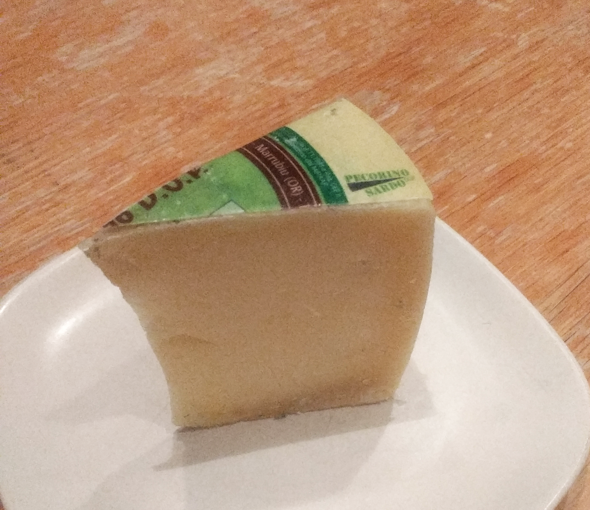
Dal disciplinare: “Il “Pecorino Sardo” D.O.P. è un formaggio a pasta semicotta, prodotto esclusivamente con latte intero di pecora, eventualmente termizzato o pastorizzato, distinto in due tipologie: dolce” di breve maturazione (20- 60 giorni) e “maturo”, a stagionatura non inferiore ai due mesi, di forma cilindrica a facce piane con scalzo diritto o leggermente convesso. “Pecorino Sardo” dolce deve presentare: - peso: compreso tra 1,0 e 2,3 kg crosta: liscia, morbida, sottile, di colore bianco o paglierino tenue pasta: bianca, morbida ed elastica, compatta o con occhiatura rada e minuta”
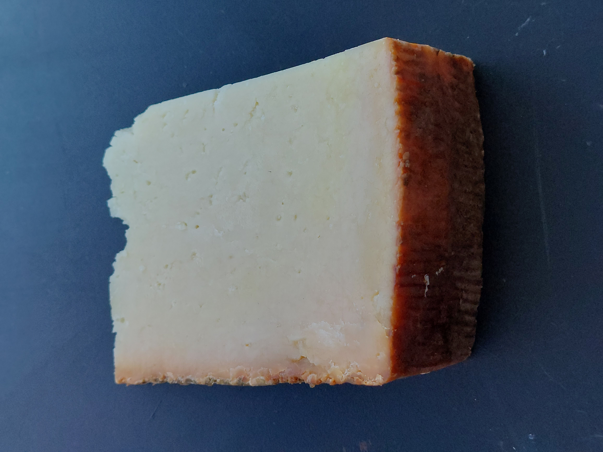
Dal disciplinare: “All’atto dell’immissione al consumo, il “Pecorino Siciliano” DOP è un formaggio di forma cilindrica a facce piane o leggermente concava quella sup eriore, a latte crudo e a pasta semicotta. Il formaggio “Pecorino Siciliano” DOP, immesso al consumo nelle tipologie “Fresco”, “Semistagionato” e “Stagionato”, presente le seguenti caratteristiche: Fresco -maturazione: da 20 a 30 giorni -forma: cilindrica, a facce piane o leggermente concava la superiore peso: compreso tra 3 e 5 kg in relazione alle dimensioni della forma superficie: assenza di crosta, parte esterna edibile di colore bianco o giallo paglierino, recante impressi i segni del canestro nel quale è stata formata”
Dal disciplinare: “La denominazione di origine «Pecorino Toscano» è ri servata al formaggio avente le seguenti caratteristiche: formaggio a pasta tenera o a pasta semi dura, prodotto esclusivamente con latte di pecora intero proveniente dalla zona di produzione. Il periodo di maturazione è di almeno venti giorni per il tipo a pasta tenera e deve essere non inferiore a quattro mesi per il tipo a pasta semidura. Per il prodotto a pasta tenera è ammessa la dicitura volontaria di “semistagionato” per il prodotto che abbia almeno 60 giorni di maturazione. È usato come formaggio da tavola o da grattugia.”
Pecorino romano
Pecorino Romano Dop

“Il Pecorino Romano D.O.P. è un formaggio unico, naturale e nutriente, prodotto esclusivamente con latte di pecora delle zone geografiche protette.
Il suo gusto aromatico, intenso e piccante - che si declina a seconda del grado di stagionatura - si sposa a meraviglia con un'infinità di sapori...anche quelli che non immagini.
Un Formaggio dalle origini antiche, perfetto per tutte le sfumature della cucina contemporanea"
Penne


Pepe tritato
Peperoncini secchi piccanti
Peperoncino
Peperoncino piccante
Peperoni
Eccellenze.
Da Fondazione Slow Food - Presìdi
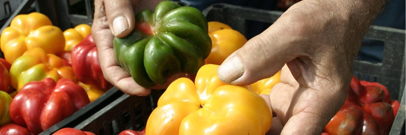
Dalla scheda ufficiale: “La papaccella è un peperone dolcissimo di calibro piccolo, tondo e costoluto, di uno sgargiante colore giallo, oppure rosso o verde, dalla buccia molto”
Peperone corno di bue di Carmagnola
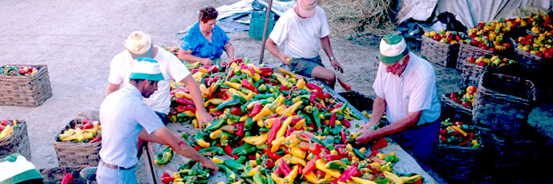
Dalla scheda ufficiale: “Il peperone corno di bue ha colori splendidi, giallo intenso o rosso vivace, e forma curiosa: conica molto allungata (oltre i 20 centimetri) con”
dal Ministero dell'agricoltura, della sovranità alimentare e delle foreste
Dal disciplinare: “La denominazione di origine protetta “Peperone di Pontecorvo” designa i frutti ottenuti nella zona delimitata al successivo art. All’atto dell’immissione al consumo il “Peperone di Pontecorvo” deve presentare le seguenti caratteristiche: Frutto: intero, trilobato. Colore: rosso, sono ammesse striature verdi fino al 40% della superficie. Forma: cilindro-conica allungata. per la Ia scelta Polpa: sottile. Cuticola: più sottile rispetto ad altri prodotti corrispondenti allo stesso genere merceologico Sapore: dolce.”
dal registro eAmbrosia - registro delle indicazioni geografiche dell'Unione europea
Dal disciplinare: “Peperone dolce di forma allungata, appuntita o a uncino, con polpa sottile e basso contenuto d'acqua. Queste caratteristiche ne favoriscono l'essiccazione e la tipica consistenza croccante dopo una breve frittura.”
Peperoni gialli e rossi
Peperoni Sotto Mosto
Peperoni sotto mosto (o sotto raspe, vinacce)
Mi ricordo che andando con i miei genitori a comprare vino ci proposero anche un barattolo di peperoni sotto raspe da assaggiare con la Bagna cauda...
Eccellenze.
"...Il sapore delicatamente dolce e lo spessore della bacca, consistente e carnoso, (caratteristica che si sta perdendo in quasi totalmente tra le attuali varietà presenti sul mercato) lo rendono particolarmente adatto alla conservazione: quella tradizionale è sotto vinaccia, per questo i peperoni di Capriglio sono sempre stati famosi e ricercati nei paesi vicini.
Si tratta di un metodo di conservazione molto semplice che consiste nel porre in una damigiana i peperoni interi, ben lavati e con il picciolo ancora attaccato, dove vengono immersi in una soluzione composta da aceto, acqua bollente e sale. La bocca della damigiana viene poi chiusa con vinacce derivate dalla torchiatura del vino freisa locale, che avviene nello stesso periodo della maturazione dei peperoni. Dopo un mese sono pronti per il consumo ma si possono conservare anche alcuni mesi..."
Da Wikipedia:
"...I peperoni sotto vinaccia si possono consumare come antipasto, affettati e in genere conditi con olio e sale. Sono anche utilizzati come accompagnamento della bagna càuda..."
Pesce spada affumicato
Petto di pollo
Picaña (Lombata)
Pinoli
Piselli
Pistilli di zafferano
Pollo
Eccellenze.
Da Fondazione Slow Food - Presìdi
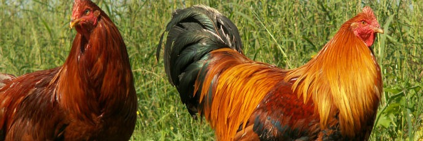
Dalla scheda ufficiale: “A Morozzo tradizionalmente i capponi si fanno con la razza bionda piemontese e, quando sono pronti, hanno una lunga coda nera con riflessi metallici”
Polpa di cavallo a fettine
Pomodori
Eccellenze.
dal Ministero dell'agricoltura, della sovranità alimentare e delle foreste

Pomodorino del Piennolo del Vesuvio DOP
Dal disciplinare: “La Denom inazione d’Origine Protetta (DOP) Pomodorino del Piennolo del Vesuvio designa il frutto degli ecotipi di pomodorini della s pecie Lycopersicon esculentum Mill. frutto di forma ovale o leggermente pruniforme con apice appuntito e frequente costolatura della parte peduncolare I frutti ammessi a tutela devono avere le seguenti caratteristiche: a) allo stato fresco, entro quattro giorni dalla raccolta.: pezzatura: peso non superiore a 30 g - parametri di forma: rapporto fra i diametri maggiore e minore: compreso fra 1,2 e 1,3 - colore esterno (a maturazione): vermiglio - colore della polpa: rosso - consistenza: elevata - sapore: vivace…”
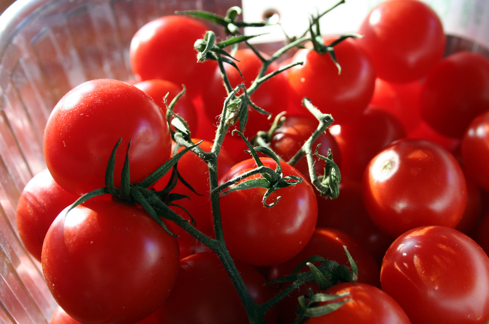

Dal disciplinare: “Pomodoro prodotto nelle tipologie tondo liscio, costoluto, cherry e oblungo. I frutti hanno colore brillante, polpa soda, gusto dolce e sapido e un contenuto zuccherino che contribuisce alla loro riconoscibilità.”
Pomodori pelati San Marzano DOP

Le caratteristiche che rendono unico e distinguibile il Pomodoro San Marzano da tutti gli altri sono ben specifiche.
I frutti hanno una tipica forma allungata e una misura solitamente compresa tra i sei e gli otto centimetri e il colore a maturazione è un rosso brillante.
La buccia sottile si stacca facilmente e custodisce una polpa elastica e corposa quasi priva di semi.
La sezione interna del pomodoro presenta due o tre logge e il sapore è tipicamente intenso ed agrodolce.
La densità della polpa, compatta e carnosa, fa sì che il San Marzano non si schiacci durante la lavorazione dando vita a pelati sodi e salse consistenti.
Dal disciplinare...
Pomodori San Marzano

Pomodorini
Eccellenze.
dal Ministero dell'agricoltura, della sovranità alimentare e delle foreste

Pomodorino del Piennolo del Vesuvio DOP
Dal disciplinare: “La Denom inazione d’Origine Protetta (DOP) Pomodorino del Piennolo del Vesuvio designa il frutto degli ecotipi di pomodorini della s pecie Lycopersicon esculentum Mill. frutto di forma ovale o leggermente pruniforme con apice appuntito e frequente costolatura della parte peduncolare I frutti ammessi a tutela devono avere le seguenti caratteristiche: a) allo stato fresco, entro quattro giorni dalla raccolta.: pezzatura: peso non superiore a 30 g - parametri di forma: rapporto fra i diametri maggiore e minore: compreso fra 1,2 e 1,3 - colore esterno (a maturazione): vermiglio - colore della polpa: rosso - consistenza: elevata - sapore: vivace…”

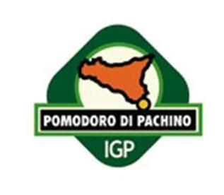
Dal disciplinare: “Pomodoro prodotto nelle tipologie tondo liscio, costoluto, cherry e oblungo. I frutti hanno colore brillante, polpa soda, gusto dolce e sapido e un contenuto zuccherino che contribuisce alla loro riconoscibilità.”
- Gulash (variante)Italia - Alto-Adige - Val-di-Casies · Secondi · Regihof
- Paccheri di Gragnano IGP con orata, pomodorini, capperi e zenzeroItalia - Sardegna · Primi · Mix Risto bottega sarda
- Pasta al ragù di triglie e al succo d'aranciaItalia - Sicilia · Primi · Web
- Penne alla "Cannata"Italia - Sicilia - Salina · Primi · Ristorante "Alla cannata"
Pomodoro rosso
Porro
- Minestra di porriFrancia · Primi · Jacqueline Gibert
- Pappa con il pomodoroItalia - Toscana · Primi · Web
- Penne con mazzancolle alle verdureItalia - Veneto · Primi · Sandro B.
- Soupe au pistouFrancia - Provenza · Primi · Guillaume E.
- Straccetti su letto di porri con rucola e aceto balsamico di ModenaItalia · Secondi
Prosciutto cotto
Prosciutto cotto affumicato
Prosciutto crudo
Eccellenze.
dal Ministero dell'agricoltura, della sovranità alimentare e delle foreste

Dal disciplinare: “Il Prosciutto Amatriciano I.G.P., all’atto dell’immissione al consumo, presenta le seguenti caratteristiche: chimico-fisiche: o Percentuale di umidità: non superiore al 60% su tal quale o Contenuto di proteine: minimo 25% sulla sostanza secca organolettiche e qualitative: o Forma: a pera con esclusione dello zampo o Colore: rosso/roseo inframmezzato dal bianco puro del grasso di marezzatura o Sapore: sapido ma non salato o Aroma: profumo gradevole, dolce ma intenso anche nelle prove all’ago o Consistenza: elastica e compatta con ottima tenuta della fetta.”
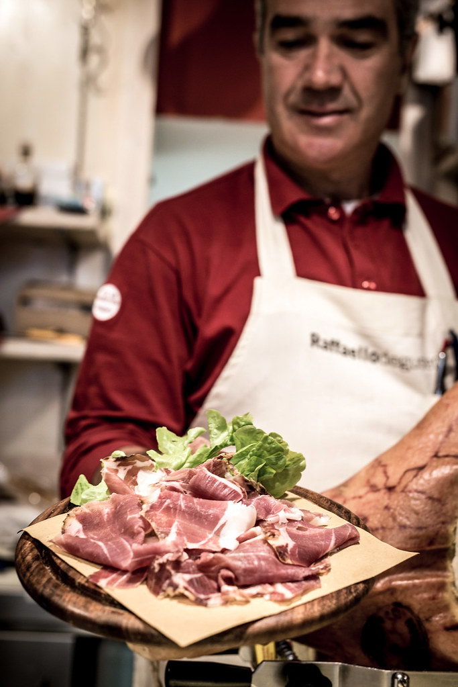
Dal disciplinare: “Prosciutto crudo salato e naturalmente stagionato, dalla forma tondeggiante e leggermente schiacciata. Al taglio è rosa salmone, con grasso bianco-rosato, profumo delicato e penetrante e gusto morbido e fragrante.”
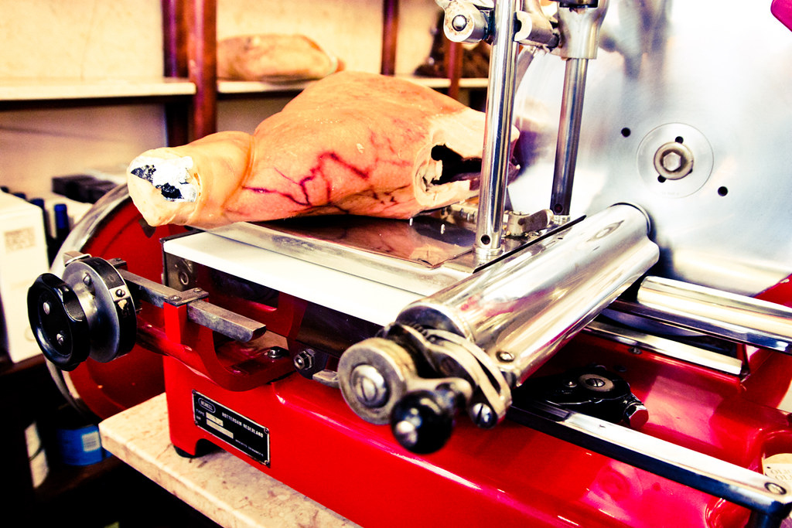
Dal disciplinare: “Prosciutto crudo stagionato dalla forma a pera, privo del piedino. Al taglio è rosso vivo, con grasso bianco, profumo dolce ma intenso, gusto sapido ma non salato e consistenza morbida e compatta.”
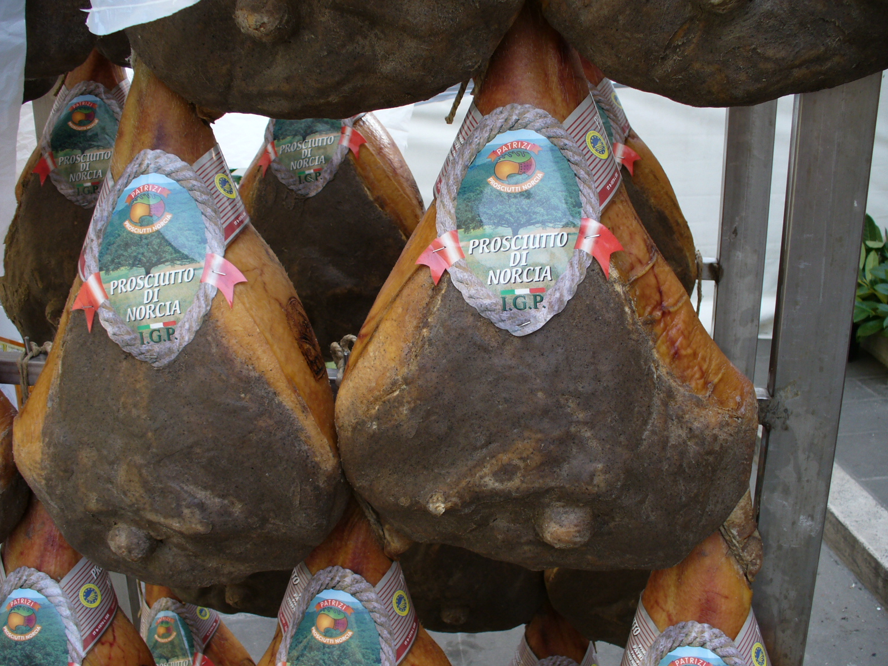
Dal disciplinare: “Prosciutto crudo stagionato dalla caratteristica forma a pera. Al taglio è rosato o rosso, con profumo delicato e speziato, sapore sapido ma non salato e consistenza compatta.”
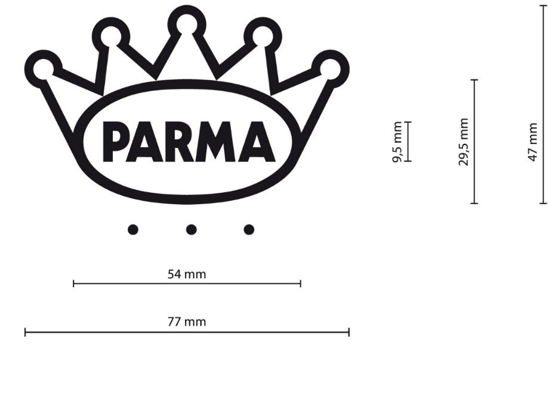
Dal disciplinare: “Prosciutto crudo stagionato ottenuto da cosce suine e sale, senza conservanti. Al taglio presenta colore uniforme dal rosa al rosso, grasso bianco, profumo fragrante, gusto dolce e delicato e consistenza morbida.”
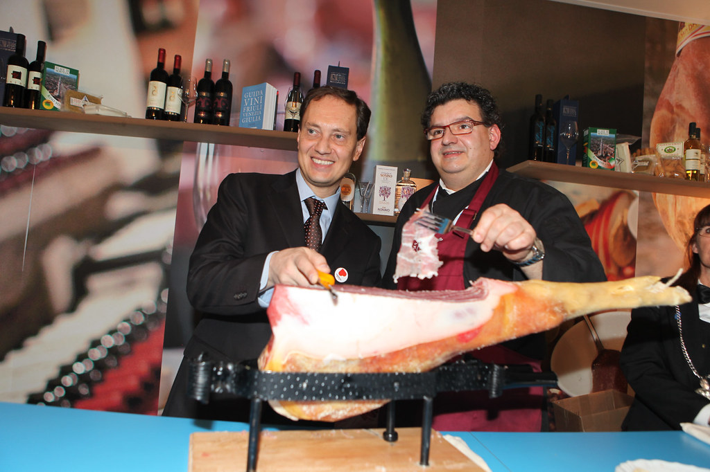
Dal disciplinare: “Prosciutto crudo stagionato riconoscibile dalla forma a chitarra e dalla presenza dello zampino. La fetta è rosso-rosata con grasso bianco, il profumo è intenso e il gusto dolce e delicato.”
Dal disciplinare: “Il Prosciutto di Sauris I.G.P. La cotenna è di colore uniforme noc e-dorato, con sfumature arancioni, priva di tracce ed ematomi o di un eccessivo reticolo venoso superficiale. La parte magra visibile è di colore rosso scuro, profilata di bianco nella porzione adiposa visibile. La consistenza è soda ed elastica, anche nella sezione verticale del taglio. presenta al taglio il colore rosso -rosato del magro, con la porzione grassa suddivi sa in leggere venature interne ed una aliquota periferica generalmente collocata tra il magro e la cotenna. Il grasso è di colore bianco candido o bianco-rosato.”
Dal disciplinare: “Prosciutto crudo stagionato dalla forma tondeggiante ad arco e dal bordo pepato. Al taglio la carne va dal rosso vivo al rosso chiaro, con poco grasso intramuscolare, profumo intenso e gusto sapido e aromatico.”
Prosciutto Veneto Berico-Euganeo DOP
Dal disciplinare: “Prosciutto crudo stagionato dalla forma naturale semipressata. Al taglio è rosato, con grasso bianco, profumo delicato e caratteristico, gusto dolce e morbido e consistenza tenera.”
Rape
Ravanelli
Riso
Eccellenze.
dal Ministero dell'agricoltura, della sovranità alimentare e delle foreste
Riso di Baraggia Biellese e Vercellese DOP
Dal disciplinare: “Descrizione del prodotto La denominazione d'origine protetta "Riso di Baraggia Biellese e Vercellese" designa, con esclusività, il prodotto risiero ottenuto mediante l'elaborazione del riso grezzo o risone a riso "integrale", "raffinato" e "parboiled".”
Riso Nano Vialone Veronese IGP
Dal disciplinare: “Riso semilavorato della varietà Vialone Nano, con chicco di media grandezza, forma tondeggiante e perla centrale estesa. Assorbe bene i condimenti e mantiene una buona consistenza in cottura.”
Da altre fonti documentarie:
Dal disciplinare: “Riso del gruppo Japonica, nelle varietà ammesse dal disciplinare, con chicco grande, compatto, cristallino o perlato e tenore proteico elevato.”
Riso bollito nel latte
Rucola
Sale
Eccellenze.
Da Fondazione Slow Food - Presìdi
Sale marino artigianale di Cervia
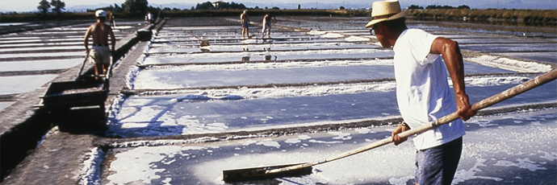
Dalla scheda ufficiale: “Sale marino integrale raccolto artigianalmente nelle saline di Cervia e lavato con acqua madre. Mantiene l'umidità naturale e, per la limitata presenza di sali amari, è tradizionalmente definito sale dolce.”
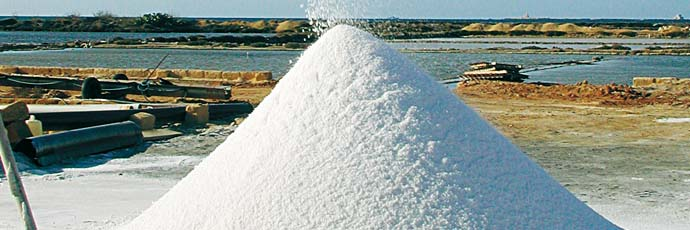
Dalla scheda ufficiale: “Lungo la costa trapanese in un suggestivo scenario di acqua, mulini a vento e piramidi bianche che diventano rosa al calare del sole, ogni”
- Agnolotti al sugo d'arrostoItalia - Piemonte - Città metropolitana di Torino - Torino · Primi · Jacqueline Gibert
- Anatra all'aranciaFrancia · Secondi · Aimée Beiersdorf
- Anatra in salsaItalia - Veneto · Secondi
- Antipasto di canocceItalia - Veneto · Antipasti
- Baccalà mantecatoItalia - Veneto - Venezia · Antipasti
- Braciole di carne di cavalloItalia - Puglia · Primi · Nicola F.
- Calamari ripieniItalia - Puglia · Secondi · Nicola F.
- CrêpesFrancia · Dolci · Jacqueline Gibert
- DaubeFrancia - Provenza · Secondi · Jacqueline Gibert
- Filettin o di maialeCroazia - Hvar · Secondi · Ristorante Hanibal
- Filetto Angus alla senape di DigioneSecondi · Serena S.
- Fusilli carciofi e salmoneItalia · Primi
- Gigot rotiFrancia · Secondi · Jacqueline Gibert
- Gnocchetti sardi alla UrbawebItalia - Veneto - Venezia · Primi · Eddy Salzano
- Gulash (variante)Italia - Alto-Adige - Val-di-Casies · Secondi · Regihof
- MadeleineFrancia - Normandia · Dolci
- Paccheri di Gragnano IGP con orata, pomodorini, capperi e zenzeroItalia - Sardegna · Primi · Mix Risto bottega sarda
- Penne alla "Cannata"Italia - Sicilia - Salina · Primi · Ristorante "Alla cannata"
- Ratatouille (variante)Francia - Provenza · Contorni · Guillaume E.
- Risi e bisiItalia - Veneto - Venezia · Primi · Web
- Riso cozze e patateItalia - Puglia - Bari · Primi · Nicola F.
- Roastbeef (arrosto all'inglese)Regno Unito · Secondi
- Salsa verdeItalia - Piemonte · Salse · Jacqueline Gibert
- Sarde a beccaficoItalia - Sicilia · Antipasti · Ricettario "La cucina Siciliana"
- Straccetti di pollo al limoneItalia · Secondi
- Straccetti su letto di porri con rucola e aceto balsamico di ModenaItalia · Secondi
- Tajin MqualliMarocco · Secondi
- Tortino di aliciItalia - Lazio - Roma · Antipasti · Eddy Salzano
- Trancio di tonno con sesamo provenzaleFrancia - Provenza · Secondi
Salmone cotto a vapore
Salsicce quadrate affumicate
Sarde
Scalogno
Schie
Scorza di limone grattugiata
Sedano
Eccellenze.
Da Fondazione Slow Food - Presìdi
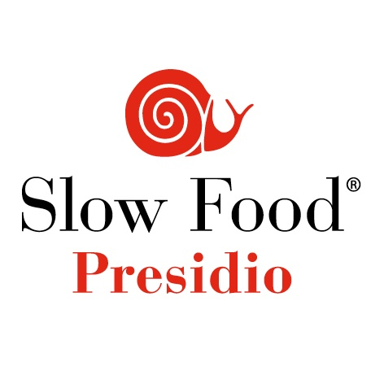
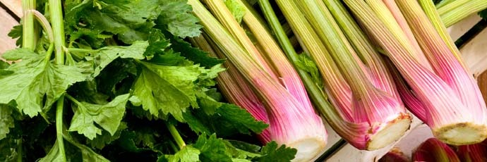
Dalla scheda ufficiale: “La storia del sedano rosso inizia nel Seicento quando fu importato dalla Francia un sedano violetto che nei secoli si è bene acclimatato negli”
dal Ministero dell'agricoltura, della sovranità alimentare e delle foreste
Sedano Bianco di Sperlonga IGP
Dal disciplinare: “2.1 Materia prima Nel territorio, di cui all’art.3, si coltiva il sedano appartenente alla specie Apium graveolens L. Il caratteristico colore chiaro è un elemento intrinseco dell’ecotipo, che comunque può essere enfatizzato con densità di semina più fitta. 2.2 Caratteristiche del prodotto All’atto dell’immissione al consumo il “Sedano bianco di Sperlonga” a Indicazione Geografica Protetta deve rispondere alle caratter istiche specifiche dell’ecotipo locale “Bianco di Sperlonga”: Pianta: taglia media, forma compatta, recante 10-15 foglie Foglie: colore verde chiaro”
- Agnolotti al sugo d'arrostoItalia - Piemonte - Città metropolitana di Torino - Torino · Primi · Jacqueline Gibert
- Antipasto di canocceItalia - Veneto · Antipasti
- Arista alla birraItalia - Campania · Secondi · NdC.
- Bagna caudaItalia - Piemonte · Secondi · Jacqueline Gibert
- Gnocchetti sardi alla UrbawebItalia - Veneto - Venezia · Primi · Eddy Salzano
- Gulash (variante)Italia - Alto-Adige - Val-di-Casies · Secondi · Regihof
- Pappa con il pomodoroItalia - Toscana · Primi · Web
- Purée di sedanoFrancia · Contorni
- Risi e bisiItalia - Veneto - Venezia · Primi · Web
- Soupe au pistouFrancia - Provenza · Primi · Guillaume E.
- Zuppa di legumi con funghi settembrini secchiItalia · Primi
Sedano rapa
Semi di sesamo
Senape
Senape di Digione
Soppressa veneta
Eccellenze.
dal Ministero dell'agricoltura, della sovranità alimentare e delle foreste
Dal disciplinare: “Insaccato di carni suine selezionate e macinate, di forma cilindrica e dimensioni anche molto grandi. Al taglio la pasta è compatta ma tenera, rosata o rossa con grasso bianco, dal profumo speziato e dal gusto delicato e leggermente agliato.”
Sopressa vicentina
Spaghetti


Spaghetti o vermicelli
Speck
Eccellenze.
dal registro eAmbrosia - registro delle indicazioni geografiche dell'Unione europea
Speck Alto Adige / Südtiroler Markenspeck / Südtiroler Speck IGP
Dal disciplinare: “Coscia suina disossata, salata e aromatizzata a secco, leggermente affumicata a freddo e stagionata. Al taglio presenta carne rosso-rosata e grasso bianco, con profumo di fumo e spezie e gusto sapido equilibrato.”
Spinaci
Stoccafisso
Eccellenze.
dal registro eAmbrosia - registro delle indicazioni geografiche dell'Unione europea
Dal disciplinare: “Merluzzo artico norvegese essiccato naturalmente all'aperto nelle isole Lofoten, senza aggiunta di sale. Dopo la maturazione presenta carne soda, colore chiaro e aroma caratteristico.”
Strutto
Subiotini
Testina di vitello
Tonno
Tonno fresco
Tonno in scatola
Topinambur
Triglie di scoglio
Uova
Uva passa
Uva sultanina
Vino bianco molto secco
Vino bianco secco
- Anatra all'aranciaFrancia · Secondi · Aimée Beiersdorf
- Aringhe in terrinaFrancia - Alsazia · Antipasti · Jacqueline Gibert
- Choux crouteFrancia - Alsazia · Piatto unico · Jacqueline Gibert
- Paccheri di Gragnano IGP con orata, pomodorini, capperi e zenzeroItalia - Sardegna · Primi · Mix Risto bottega sarda
- Tonno alla CarloFortinaItalia - Sardegna - Carloforte · Secondi · Serena S.
Vino rosso
Vitello
Eccellenze.
dal registro eAmbrosia - registro delle indicazioni geografiche dell'Unione europea
Vitellone Bianco dell'Appennino Centrale IGP
Dal disciplinare: “colore delle parti carnose esposte della carcassa non deve presentare colorazioni anomale (magenta o tendente al nero). Il colore del grasso visibile non deve tendere al giallo cinerino ne' deve avere venature tendenti al giallo carico. I parametri qualitativi della carne di Vitellone Bianco dell'Appennino Centrale devono essere: - pH fra 5.2 e 5.8 -.”
Wurster di diverse qualità
Zafferano
Eccellenze.
dal Ministero dell'agricoltura, della sovranità alimentare e delle foreste
Dal disciplinare: “Descrizione del prodotto- Lo "Zafferano dell'Aquila" a Denommazione d'Origine Protetta (DOP) si ottiene dagli stimmi del fiore del Crocus Sativus L., pianta tubero-bulbosa appartenente alla famiglia delle iridacee.. Il prodotto è di colore rosso porpora e viene commercializzato, previa tostatura, in filamenti allo stato naturale o in polvere. Il prodotto ammesso a tutela, in condizioni di assoluta purezza, deve avere le seguenti caratteristiche: a) Presentazione - Polvere, mediante macinatura degli”
Zafferano di San Gimignano DOP
Dal disciplinare: “Descrizione del prodotto Lo "Zafferano di San Gimignano" è costituito esclusivamente dalla parte di colore rosso aranciato, sottoposta a tostatura, degli stimmi dei fiori provenienti dalla coltivazione del bulbo-tubero "crocus sativus L.", pianta erbacea monocotiledone appartenente alla famiglia delle iridacee. Dopo la tostatura, il loro colore vira da aranciato in un caratteristico rosso bordeaux.”
Dal disciplinare: “Zafferano in stimmi essiccati ottenuto in Sardegna da Crocus sativus L. Si distingue per l'elevato potere colorante, l'aroma intenso e il gusto deciso.”
Zenzero
Zucchero di canna
Zucchero semolato
Zucchine
- Gnocchetti sardi alla UrbawebItalia - Veneto - Venezia · Primi · Eddy Salzano
- Penne con mazzancolle alle verdureItalia - Veneto · Primi · Sandro B.
- Penne con zucchineItalia · Primi
- Ratatouille (variante)Francia - Provenza · Contorni · Guillaume E.
- Soupe au pistouFrancia - Provenza · Primi · Guillaume E.
- Zucchine in scapeceItalia - Campania - Napoli · Antipasti